Instalación
Esta sección reúne todo lo necesario para dejar Plexe operativo desde cero: qué componentes intervienen y qué hace cada uno, cómo se relacionan entre sí, el procedimiento completo de descarga y compilación en Ubuntu 24.04 (incluido el caso de Ubuntu en Windows mediante WSL), cómo verificar que la instalación quedó correcta, y qué hacer cuando algo falla.
Última actualización: agosto de 2026
Este manual documenta las versiones vigentes a esa fecha. Plexe evoluciona, y con él las versiones compatibles de OMNeT++, SUMO y Veins. Antes de instalar, revisa la página oficial de Plexe y confirma que las versiones indicadas aquí siguen siendo las recomendadas. Si cambiaron, la referencia válida es la página oficial, no este manual.
1 · Qué vas a instalar
Plexe no es un programa que se instala solo. Es la capa más alta de una estructura de cuatro componentes, y cada uno necesita que el anterior esté construido antes de poder compilarse.
| # | Componente | Versión | Qué hace |
|---|---|---|---|
| 1 | OMNeT++ | 6.2.0 | Motor de simulación de eventos discretos. La base sobre la que corre todo lo demás. |
| 2 | SUMO | 1.22.0 | Simulador de tráfico microscópico. Genera y mueve los vehículos. |
| 3 | Veins | 5.3.1 | Puente que sincroniza OMNeT++ con SUMO y aporta la comunicación vehicular (V2V). |
| 4 | Plexe | 3.2 | Capa de platooning: controladores longitudinales, protocolos cooperativos y maniobras. |
Por qué el orden importa
El orden no es una recomendación de estilo, es una dependencia técnica:
- OMNeT++ va primero y sin excepción. Es la base, y tanto Veins como Plexe se compilan enlazándose contra él.
- SUMO es el único que no bloquea la compilación de nada, porque Veins lo controla en tiempo de ejecución a través de una interfaz de red, no en tiempo de compilación. Aun así conviene instalarlo temprano, justo después de OMNeT++: es el punto donde más fácil es equivocarse de versión. Dejarlo para el final significa arriesgarse a descubrir un error de versión recién al intentar la primera simulación, con todo lo demás ya construido.
- Veins no compila si OMNeT++ no está construido y su entorno cargado en la terminal.
- Plexe no compila si no le indicas dónde está la carpeta de Veins ya construida.
Saltarse el orden no produce un error claro. Produce mensajes de compilación confusos que cuesta mucho diagnosticar.
Lo único obligatorio respecto de SUMO
SUMO no hace falta para compilar Veins ni Plexe: ambos compilan perfectamente sin que SUMO esté instalado. Lo que sí es obligatorio es tenerlo antes de la verificación del paso 7, porque sin SUMO no hay simulación que correr. La recomendación de instalarlo temprano es de prudencia, no de dependencia técnica.
Por qué las versiones son exactas
Las versiones de la tabla no son "mínimas recomendadas". Son una combinación probada, y mezclar versiones es la causa más frecuente de instalaciones que fallan.
No superes SUMO 1.22.0
Las versiones de SUMO posteriores a la 1.22.0 cambiaron la API de TraCI, y Veins 5.3.1 no es compatible con esa API nueva. La instalación va a parecer correcta y el error aparecerá recién al intentar correr una simulación.
Fuente: guía oficial de Plexe, Step 3: Install SUMO, que advierte no pasar de SUMO 1.22.0 porque Veins 5.3.1 todavía no soporta la nueva versión de la API.
2 · Descargar y compilar: dos cosas distintas
Aquí se concentra la mayor parte de la confusión al instalar Plexe, así que vale la pena separarlo con claridad. Son dos operaciones independientes:
Descargar el código. Traer los archivos fuente a tu disco. No depende del sistema operativo, porque el código es idéntico para Linux, macOS o Windows. Hay dos formas (bajar un archivo ZIP o clonar el repositorio Git) y elegir una u otra no cambia absolutamente nada de lo que viene después.
Compilar. Traducir ese código fuente a programas ejecutables. Esto sí depende del sistema operativo, porque cambian el compilador, las librerías y las rutas.
Cómo se descarga cada componente
No todos los componentes ofrecen las mismas opciones:
| Componente | Cómo se descarga | ¿Se compila? |
|---|---|---|
| OMNeT++ | Archivo comprimido desde omnetpp.org | Sí |
| SUMO | Archivo comprimido con el código fuente desde sumo.dlr.de | Sí |
| Veins | ZIP o clonar repositorio | Sí |
| Plexe | ZIP o clonar repositorio | Sí |
Dos observaciones importantes:
- Solo Veins y Plexe tienen la doble opción ZIP/Git. La documentación oficial de Plexe recomienda clonar el repositorio y desaconseja el ZIP.
- SUMO no tiene una versión aparte para Plexe. Desde su versión 1.2.0, los modelos que Plexe necesita vienen incluidos en la versión oficial de SUMO, así que se baja y se compila esa versión oficial, como se explica en el paso 3.
Si consultas la documentación oficial
El sitio de Plexe separa estas dos operaciones en dos páginas distintas: Download y Building. Es útil saber que la página Download cubre únicamente Plexe, porque tanto el ZIP como el repositorio contienen Plexe y nada más. OMNeT++, SUMO y Veins se descargan cada uno de su propio sitio, y esas indicaciones están en la página Building, no en Download. La única excepción es Instant Plexe, que está en esa misma página y sí trae los cuatro componentes ya instalados.
Cómo se compila en cada sistema operativo
En este manual los cuatro componentes se compilan, y todos siguen el mismo patrón de dos etapas: primero se configura, es decir se detecta qué hay instalado en tu máquina, y después se construye. En OMNeT++, Veins y Plexe esas etapas son ./configure y make; en SUMO, cmake -B build . y cmake --build build.
Lo que cambia entre sistemas operativos no es qué se compila ni con qué comandos, sino de dónde salen las dependencias y cuánta fricción hay en el camino:
| Sistema operativo | Dependencias se instalan con | Particularidades | Recomendación |
|---|---|---|---|
| Linux (Ubuntu 24.04) | apt |
Ninguna. Camino directo. | El camino de este manual |
| Ubuntu en Windows (WSL) | apt, idéntico a Linux |
Instalar WSL 2 antes que nada | Sigues en Windows, con Linux adentro |
| macOS | MacPorts | Puede requerir Xcode, y en equipos con procesador Apple hay ajustes extra | Funciona bien |
| Windows (nativo) | A mano, con MinGW | Librerías externas que hay que bajar una por una, y documentación oficial incompleta | Evitar, usar WSL |
Este manual se escribió y se verificó sobre Ubuntu 24.04 en WSL 2, bajo Windows 11, que es el entorno de trabajo del laboratorio.
Lo que recomiendan los autores de Plexe
Usar WSL es una recomendación de este manual, no de los autores, que no lo mencionan en ningún momento. Permite seguir trabajando en Windows y tener Ubuntu funcionando dentro, en la misma máquina: se obtiene el entorno Linux que los autores recomiendan sin abandonar Windows ni instalar un segundo sistema.
En cuanto a los tres sistemas que sí documentan, su orden de preferencia es claro. Linux es el entorno más eficiente y ahí compilar resulta casi automático. macOS funciona muy parecido a Linux, con la molestia de necesitar Xcode. Windows no lo recomiendan: exige bajar librerías externas a mano, lo califican de muy ineficiente, y sugieren recurrir a Instant Plexe si da problemas.
Los comandos de compilación son los mismos en todos los sistemas
Configurar y construir se hace igual en Linux, en WSL y en macOS. La diferencia está en el trabajo previo de dejar las dependencias instaladas, y ahí es donde Windows nativo se vuelve costoso.
3 · Cómo encaja todo
Las capas
Cada componente se apoya en el anterior. Leído de abajo hacia arriba, este diagrama es también el orden de instalación:
flowchart BT
O["OMNeT++ 6.2.0<br/>motor de simulación"]
S["SUMO 1.22.0<br/>tráfico vehicular"]
V["Veins 5.3.1<br/>puente V2V"]
P["Plexe 3.2<br/>platooning"]
O --> V
S --> V
V --> PEl recorrido de cada componente
Cada pieza sigue su propio camino desde la descarga hasta quedar operativa. Las flechas punteadas marcan las dependencias reales de compilación:
flowchart LR
A1["OMNeT++<br/>archivo comprimido"] --> A2["cargar entorno<br/>source setenv"] --> A3["compilar"]
B1["Veins<br/>ZIP o Git"] --> B2["compilar"]
C1["Plexe<br/>ZIP o Git"] --> C2["compilar<br/>indicando ruta de Veins"]
D1["SUMO<br/>código fuente"] --> D2["compilar<br/>con CMake"]
A3 -.->|"habilita"| B2
B2 -.->|"habilita"| C2Este diagrama deja ver las dos cosas que más se malinterpretan: que SUMO se compila por su cuenta, sin depender de los demás, y que el entorno de OMNeT++ se carga antes de compilar, incluso el propio OMNeT++.
Cómo queda tu disco
Todo vive dentro de una sola carpeta, ~/src/. Al terminar la instalación debería verse así:
~/src/
├── omnetpp-6.2.0/ ← motor de simulación
├── veins/ ← puente V2V
├── plexe/ ← platooning
└── sumo-1.22.0/ ← tráfico vehicular
Mantén el código en ~/src, no en /mnt/c
Si trabajas con WSL, es tentador dejar el código en una carpeta de Windows accesible desde /mnt/c/.... No lo hagas. El acceso a disco entre los dos sistemas es muy lento y la compilación puede tardar varias veces más. ~/src/ vive en el disco de Linux, que es donde debe estar.
4 · El camino de este manual
A partir de aquí el manual documenta un solo camino: Ubuntu 24.04, sea instalado directamente o corriendo dentro de Windows mediante WSL. Es el entorno del laboratorio y el único verificado.
| Tu situación | Qué hacer |
|---|---|
| Windows | Sección 5, empezando por el paso 0, que instala Ubuntu dentro de Windows. |
| Ubuntu o cualquier Linux | Sección 5, saltándote el paso 0. |
| macOS o Windows nativo | Sección 6. |
| Solo quieres probar Plexe | Sección 7, Instant Plexe. |
Instant Plexe es una máquina virtual con los cuatro componentes ya instalados y compilados: sirve para tener Plexe corriendo en minutos sin compilar nada, pero trae la versión 3.0 y no la 3.2 que documenta este manual. Se describe en la sección 7.
5 · Instalación paso a paso (Ubuntu 24.04 / WSL)
A partir de aquí empieza el procedimiento. Cada paso incluye descargar el componente y dejarlo construido antes de pasar al siguiente.
La numeración no coincide con la del sitio oficial
Este manual reordena dos cosas respecto de la guía oficial: adelanta SUMO antes de Veins, y separa en dos pasos lo que allí es uno solo (Install Plexe and Veins). El resultado es el mismo; el motivo está en la sección 1.
Paso 0: WSL (solo si vienes de Windows)
Si tu computador tiene Windows, este es tu verdadero primer paso y no aparece en la documentación oficial de Plexe.
WSL no es un emulador. Corre un núcleo Linux real en paralelo a Windows, así que el Ubuntu que instalas aquí es Ubuntu de verdad: mismo apt, mismo compilador, mismos binarios. Plexe no distingue entre este Ubuntu y uno instalado directamente en el disco, y por eso todas las instrucciones de esta página se aplican sin ninguna modificación.
0.1 Comprobar los requisitos
Antes de instalar, confirma tres cosas:
- Permisos de administrador en Windows. El paso 0.2 los pide.
- Conexión a internet. El paso 0.2 descarga WSL y Ubuntu.
- Virtualización activada. Abre el Administrador de tareas (
Ctrl + Shift + Esc) → Rendimiento → CPU, y revisa que diga Virtualización: Habilitado. Si dice «Deshabilitado», hay que activarla en la BIOS del equipo antes de seguir; eso depende de cada fabricante y no se cubre aquí.
Equipo de referencia
Las salidas de terminal de esta página son las que se obtuvieron en este equipo: Windows 11 Pro 25H2 (compilación 26200), Intel Core i7-14700 (20 núcleos, 28 hilos) y 32 GB de RAM.
0.2 Instalar WSL y Ubuntu 24.04
Abre PowerShell como administrador (clic derecho sobre PowerShell en el menú Inicio → Ejecutar como administrador) y ejecuta:
Fuente: documentación oficial de Microsoft, Instalación de WSL. La guía de Plexe no menciona WSL.
El comando hace dos instalaciones seguidas: primero WSL y después Ubuntu 24.04. Al terminar, Ubuntu arranca por primera vez en la misma ventana.
Así debería verse tu terminal:
PS C:\WINDOWS\system32> wsl --install -d Ubuntu-24.04
Descargando: Subsistema de Windows para Linux 2.7.14
Instalando: Subsistema de Windows para Linux 2.7.14
Se ha instalado Subsistema de Windows para Linux 2.7.14.
La operación se completó correctamente.
Descargando: Ubuntu 24.04 LTS
Instalando: Ubuntu 24.04 LTS
Distribución instalada correctamente. Se puede iniciar a través de "wsl.exe -d Ubuntu-24.04"
Iniciando Ubuntu-24.04...
Provisioning the new WSL instance Ubuntu-24.04
This might take a while...
Create a default Unix user account:
- La versión de WSL (aquí 2.7.14) depende de la fecha en que instales; puede ser más nueva.
- Los mensajes de WSL salen en el idioma de tu Windows; los de Ubuntu, en inglés.
- También se abre sola una ventana «Te damos la bienvenida a WSL». Es informativa y puedes cerrarla.
¿Pide reiniciar?
En el equipo de referencia no hizo falta, porque la Plataforma de máquina virtual de Windows ya estaba activa. Si en tu equipo aparece un mensaje pidiendo reiniciar, reinicia antes de seguir.
0.3 Crear tu usuario de Linux
En su primer arranque, Ubuntu pide crear una cuenta. Es una cuenta de Linux, independiente de tu usuario de Windows.
- Nombre de usuario. Debe empezar con una letra minúscula o un guion bajo, y solo puede tener minúsculas, números, guiones bajos y guiones. Sin mayúsculas ni espacios.
- Contraseña, dos veces. Es la contraseña que te pedirá
sudo, así que anótala. Mientras la escribes no aparece nada en pantalla: lee el aviso de abajo antes de empezar.
La contraseña no se ve mientras la escribes
Al escribir la contraseña, la terminal no muestra nada: ni letras, ni puntos, ni asteriscos, y el cursor no avanza. Parece que el teclado no responde, pero sí está registrando lo que escribes. Es el comportamiento normal de Linux. Escríbela completa y presiona Enter. Si las dos veces no coinciden, Ubuntu te deja intentarlo de nuevo (ver «Si te equivocas», más abajo).
Así debería verse tu terminal:
Create a default Unix user account: victorjaque
New password:
Retype new password:
passwd: password updated successfully
To run a command as administrator (user "root"), use "sudo <command>".
See "man sudo_root" for details.
victorjaque@DESKTOP-6VI5783:/mnt/c/WINDOWS/system32$
La última línea indica que ya estás dentro de Ubuntu, con la forma usuario@nombre-del-equipo:carpeta$. Verás tu propio usuario y el nombre de tu PC.
Si te equivocas
Un nombre con mayúsculas o espacios se rechaza, y Ubuntu lo vuelve a pedir:
Create a default Unix user account: Victor Jaque
Invalid username. A valid username must start with a lowercase letter or underscore, and can contain lowercase letters, digits, underscores, and dashes.
Si las dos contraseñas no coinciden, responde y para intentarlo de nuevo:
Quedaste en una carpeta de Windows
Como Ubuntu arrancó desde PowerShell, la terminal quedó en /mnt/c/WINDOWS/system32, que es C:\WINDOWS\system32 visto desde Linux. No trabajes ahí (ver el consejo sobre /mnt/c en la sección 3).
Ejemplo real: así se vio la instalación en el equipo de referencia

La captura muestra los pasos 0.2 y 0.3 tal como ocurrieron, incluidos los dos errores del recuadro «Si te equivocas»: el nombre de usuario rechazado dos veces y las contraseñas que no coincidieron en el primer intento.
0.4 Abrir la terminal de Ubuntu
Desde ahora, cada vez que trabajes con Plexe empezarás abriendo la terminal de Ubuntu. Hay dos formas.
Forma 1: desde el menú Inicio
- Presiona la tecla Windows.
- Escribe
Ubuntu. - Presiona Enter, o haz clic en Ubuntu-24.04.
Se abre la terminal de Ubuntu.
Forma 2: anclada a la barra de tareas, a un clic
- Presiona la tecla Windows y escribe
Ubuntu. - Haz clic derecho sobre Ubuntu-24.04.
- Elige Anclar a la barra de tareas.
El ícono de Ubuntu queda en la barra de tareas, abajo en la pantalla. Desde entonces, un clic sobre ese ícono abre la terminal.
Ejemplo real: anclar Ubuntu a la barra de tareas en el equipo de referencia

Con cualquiera de las dos formas, la terminal se abre en tu carpeta de Linux: la línea termina en :~$ (en el equipo de referencia, victorjaque@DESKTOP-6VI5783:~$). Ya no quedas en una carpeta de Windows, como pasó en el paso 0.3.
0.5 Actualizar Ubuntu
0.6 Verificar la instalación
0.7 Probar las ventanas gráficas (WSLg)
Dos mundos, un computador
Con WSL tienes dos entornos separados en la misma máquina: Windows (PowerShell, C:\Users\...) y Linux (terminal de Ubuntu, /home/usuario/...). La regla práctica es simple: si la terminal de Ubuntu está abierta, estás en Linux, y ahí se ejecuta todo lo de esta página.
La sección 'Building for Windows' no es para ti
La documentación oficial tiene un apartado de compilación para Windows nativo, con MinGW y sin Linux de por medio. No es tu caso y no debes seguirlo. Además está desactualizado: el propio autor lo desaconseja y contiene instrucciones sin terminar. Con WSL usas la ruta de Linux, que es la mantenida.
Paso 1: Dependencias del sistema
Antes de compilar cualquier componente hay que instalar el compilador, las herramientas de construcción y las librerías de las que dependen OMNeT++, Veins y Plexe. Todo se instala con apt, el instalador de paquetes de Ubuntu, en dos comandos. La lista de paquetes es exactamente la de la guía oficial (Install required libraries and tools): compilador, herramientas de construcción, Python, librerías XML y de compresión, generación de documentación, las librerías Qt6 de Qtenv (la ventana gráfica donde corre la simulación) y R.
Este paso se ejecuta una única vez por máquina.
sudo pide tu contraseña de Ubuntu
Los dos comandos empiezan con sudo, así que la terminal pedirá la contraseña que creaste en el paso 0.3 ([sudo] password for ...). Igual que entonces, no se ve nada mientras la escribes. sudo la recuerda unos 15 minutos y solo en esa ventana: si pasa más tiempo, o abres otra ventana, la vuelve a pedir.
1.1 Actualizar la lista de paquetes
Descarga la lista actualizada de paquetes disponibles. No instala nada.
En una terminal de Ubuntu, nueva o la que ya tengas abierta, ejecuta el siguiente comando:
Fuente: guía de instalación de OMNeT++, capítulo Ubuntu (versión 6.2.0: ch-ubuntu.rst), que lo recomienda antes de instalar paquetes. La guía de Plexe no lo incluye.
Así debería verse tu terminal (abreviado):
victorjaque@DESKTOP-6VI5783:~$ sudo apt update
[sudo] password for victorjaque:
Get:1 http://security.ubuntu.com/ubuntu noble-security InRelease [126 kB]
Hit:2 http://archive.ubuntu.com/ubuntu noble InRelease
Get:3 http://archive.ubuntu.com/ubuntu noble-updates InRelease [126 kB]
...
Get:52 http://archive.ubuntu.com/ubuntu noble-backports/multiverse amd64 c-n-f Metadata [116 B]
Fetched 37.3 MB in 6s (5995 kB/s)
Reading package lists... Done
Building dependency tree... Done
Reading state information... Done
43 packages can be upgraded. Run 'apt list --upgradable' to see them.
El aviso final (43 packages can be upgraded) es normal y no impide seguir: esas actualizaciones corresponden al paso 0.5.
Ejemplo real: así se vio sudo apt update en el equipo de referencia

1.2 Instalar las dependencias
En la misma terminal, ejecuta el siguiente comando:
sudo apt install -y make diffutils pkg-config ccache clang lld gdb lldb \
bison flex perl sed gawk python3 python3-pip python3-venv python3-dev \
libxml2-dev zlib1g-dev doxygen graphviz xdg-utils libdw-dev \
qt6-base-dev qt6-base-dev-tools qmake6 libqt6svg6 qt6-wayland libwebkit2gtk-4.1-0 \
r-base
Fuente: guía oficial de Plexe, Install required libraries and tools, en la sección Building for Linux. El comando es idéntico al de la guía; aquí solo se reparte en varias líneas para que se lea mejor.
La opción -y responde «sí» sola a la confirmación de instalar, así que el comando corre de principio a fin sin preguntar nada.
Así debería verse tu terminal (inicio, abreviado):
victorjaque@DESKTOP-6VI5783:~$ sudo apt install -y make diffutils pkg-config ccache clang lld gdb lldb bison flex perl sed gawk python3 python3-pip python3-venv python3-dev libxml2-dev zlib1g-dev doxygen graphviz xdg-utils libdw-dev qt6-base-dev qt6-base-dev-tools qmake6 libqt6svg6 qt6-wayland libwebkit2gtk-4.1-0 r-base
[sudo] password for victorjaque:
Reading package lists... Done
Building dependency tree... Done
Reading state information... Done
diffutils is already the newest version (1:3.10-1ubuntu0.1).
sed is already the newest version (4.9-2ubuntu0.24.04.1).
sed set to manually installed.
gawk is already the newest version (1:5.2.1-2ubuntu0.1).
gawk set to manually installed.
python3 is already the newest version (3.12.3-0ubuntu2.1).
python3 set to manually installed.
The following additional packages will be installed:
alsa-topology-conf alsa-ucm-conf aspell aspell-en bubblewrap build-essential bzip2 ...
Cómo leer esa salida:
- «is already the newest version»: ese paquete ya venía con Ubuntu. No es un error.
- «The following additional packages will be installed»: son dependencias que
aptagrega por su cuenta. Entre ellas lleganbuild-essential,g++yr-base-dev, que otras guías piden por separado. - En el equipo de referencia se instalaron 385 paquetes nuevos y se actualizaron 14.
El paso terminó bien cuando vuelve a aparecer la línea victorjaque@...:~$ y no hay ningún mensaje que empiece con E:.
1.3 Verificar
Comprueba que las herramientas principales quedaron instaladas. En la misma terminal, ejecuta los siguientes comandos:
Fuente: agregado en este manual.
Así debería verse tu terminal:
victorjaque@DESKTOP-6VI5783:~$ clang --version | head -1
Ubuntu clang version 18.1.3 (1ubuntu1)
victorjaque@DESKTOP-6VI5783:~$ qmake6 --version | tail -1
Using Qt version 6.4.2 in /usr/lib/x86_64-linux-gnu
victorjaque@DESKTOP-6VI5783:~$ python3 --version
Python 3.12.3
victorjaque@DESKTOP-6VI5783:~$ R --version | head -1
R version 4.3.3 (2024-02-29) -- "Angel Food Cake"
Después de este paso, el disco de Ubuntu ocupa en total unos 3,2 GB en el equipo de referencia.
Paso 2: OMNeT++ 6.2.0
OMNeT++ es el motor de simulación. Todo lo demás corre encima, así que va primero.
2.1 Descargar
Se baja como archivo comprimido (unos 400 MB) desde el sitio oficial de OMNeT++ y se descomprime dentro de ~/src/, la carpeta que indica la guía de Plexe. La carpeta resultante conserva el número de versión completo.
En una terminal de Ubuntu, nueva o la que ya tengas abierta, ejecuta los siguientes comandos:
Fuente: la carpeta ~/src la indica la guía oficial de Plexe (Step 1: Install OMNeT++). El mkdir lo agrega este manual, porque la guía da por hecho que esa carpeta ya existe.
En la misma terminal, dentro de ~/src, ejecuta el siguiente comando:
wget https://github.com/omnetpp/omnetpp/releases/download/omnetpp-6.2.0/omnetpp-6.2.0-linux-x86_64.tgz
Fuente: archivo oficial de OMNeT++ 6.2.0 para Linux, publicado en su GitHub. La guía de Plexe solo enlaza a la página de descargas de OMNeT++; descargarlo con wget lo agrega este manual, para hacerlo desde la terminal.
Ejemplo real: así empieza la descarga en el equipo de referencia

La dirección larga que aparece después de 302 Found es normal: GitHub redirige la descarga a su servidor de archivos mediante un enlace temporal.
Cuando termine la descarga, en la misma terminal, dentro de ~/src, ejecuta los siguientes comandos:
Fuente: guía de instalación de OMNeT++, capítulo Linux, sección Downloading and Unpacking (versión 6.2.0: ch-supported-linux.rst). El comando oficial es tar xvfz omnetpp-6.2.0-linux-x86_64.tgz; aquí se quita la v para que no liste en pantalla los miles de archivos que descomprime, y el resultado es el mismo. El ls lo agrega este manual, para comprobar el resultado.
Así debería verse tu terminal:
victorjaque@DESKTOP-6VI5783:~/src$ tar xzf omnetpp-6.2.0-linux-x86_64.tgz
victorjaque@DESKTOP-6VI5783:~/src$ ls ~/src
omnetpp-6.2.0 omnetpp-6.2.0-linux-x86_64.tgz
tar no muestra nada mientras descomprime. ls confirma que apareció la carpeta omnetpp-6.2.0; el archivo .tgz queda al lado y ya no se necesita.
Ejemplo real: así terminan la descarga y la descompresión en el equipo de referencia

Las líneas amontonadas de la barra de progreso son solo un efecto visual: la barra se redibuja muchas veces y, si la ventana es angosta, se desordena. Lo que importa es la línea saved [415465426/415465426]: cuando los dos números son iguales, la descarga está completa.
2.2 Cargar el entorno
Antes de compilar hay que preparar la terminal en dos partes: un entorno de Python propio de OMNeT++, que se crea una sola vez, y las variables de entorno de OMNeT++, que se cargan en cada terminal nueva.
En una terminal de Ubuntu, nueva o la que ya tengas abierta, ejecuta el siguiente comando:
Fuente: guía oficial de Plexe (Step 1: Install OMNeT++).
Solo la primera vez: el entorno de Python de OMNeT++
En la misma terminal, dentro de ~/src/omnetpp-6.2.0, ejecuta los siguientes comandos:
python3 -m venv .venv --upgrade-deps --clear --prompt "omnetpp/.venv"
source .venv/bin/activate
python3 -m pip install -r python/requirements.txt
Fuente: guía de instalación de OMNeT++, capítulo Ubuntu (versión 6.2.0: ch-ubuntu.rst). La guía de Plexe solo avisa que puede hacer falta un entorno virtual de Python.
python3 -m venv ...crea el entorno en la carpeta.venv, dentro de la carpeta de OMNeT++.source .venv/bin/activatelo activa: desde ese momento la línea empieza con(omnetpp/.venv).pip installinstala en ese entorno las librerías de Python que pide OMNeT++: matplotlib, numpy, pandas, scipy e ipython.
Ejemplo real: creación del entorno de Python en el equipo de referencia

La primera línea del pip install, Ignoring setuptools, es normal: ese paquete solo se usa en Windows.
En cada terminal nueva: las variables de OMNeT++
En la misma terminal, dentro de ~/src/omnetpp-6.2.0, ejecuta el siguiente comando:
Fuente: guía oficial de Plexe (Step 1: Install OMNeT++) y guía de instalación de OMNeT++, capítulo Linux, sección Environment Variables.
Así debería verse tu terminal:
(omnetpp/.venv) victorjaque@DESKTOP-6VI5783:~/src/omnetpp-6.2.0$ source setenv
Activating python virtual environment in '/home/victorjaque/src/omnetpp-6.2.0/.venv'
Environment for 'omnetpp-6.2.0' in directory '/home/victorjaque/src/omnetpp-6.2.0' is ready.
Type "./configure" and "make" to build the simulation libraries.
When done, type "omnetpp" to start the IDE.
- Environment for 'omnetpp-6.2.0' … is ready indica que el entorno quedó cargado.
setenvtambién activa solo el entorno de Python (Activating python virtual environment). Por eso, en una terminal nueva basta concd ~/src/omnetpp-6.2.0ysource setenv: no hace falta repetirsource .venv/bin/activate.
Ejemplo real: final del pip install y source setenv en el equipo de referencia

El pip install terminó bien cuando aparece Successfully installed, seguido de la lista de librerías instaladas.
Esto se repite en cada terminal nueva
Cargar el entorno no es permanente: afecta solo a la terminal donde lo ejecutas. Si cierras la terminal o abres otra, hay que volver a hacerlo. Olvidarlo es, por lejos, la causa más frecuente de errores durante la instalación y de comandos que "no existen" cuando en realidad sí están instalados. Para no depender de la memoria, se puede añadir a la configuración del intérprete de comandos y quedará automático.
2.3 Compilar
La compilación se hace en dos etapas: primero ./configure detecta qué hay instalado en tu sistema, y después make construye OMNeT++. Las dos se ejecutan dentro de ~/src/omnetpp-6.2.0, en la misma terminal donde cargaste el entorno en el paso 2.2.
Si abriste una terminal nueva, ejecuta en ella los siguientes comandos:
Fuente: guía oficial de Plexe (Step 1: Install OMNeT++), igual que en el paso 2.2.
La salida es la misma del paso 2.2.
2.3.1 Configurar
En la terminal donde cargaste el entorno en el paso 2.2, dentro de ~/src/omnetpp-6.2.0, ejecuta el siguiente comando:
Fuente: guía oficial de Plexe (Step 1: Install OMNeT++) y guía de instalación de OMNeT++, capítulo Linux, sección Configuring and Building OMNeT++.
Error: Cannot find OpenSceneGraph 3.2 or later
Cuándo aparece: la primera vez que se ejecuta ./configure, si en el paso 1 se instalaron solo los paquetes de la guía de Plexe.
Qué significa: OpenSceneGraph es la librería de la vista 3D de Qtenv. OMNeT++ 6.2.0 viene con esa vista activada (WITH_OSG=yes en el archivo configure.user), pero la lista de paquetes de la guía de Plexe no instala OpenSceneGraph, así que ./configure se detiene. Plexe no necesita la vista 3D.
checking for OpenSceneGraph with CFLAGS=... no
configure: error: Cannot find OpenSceneGraph 3.2 or later - 3D view in Qtenv will not be available. Set WITH_OSG=no in configure.user to disable this feature or install the development package for OpenSceneGraph.
Ejemplo real: así apareció el error en el equipo de referencia

Solución: desactivar la vista 3D
Hay dos salidas oficiales: desactivar la vista 3D o instalar OpenSceneGraph (libopenscenegraph-dev, un paquete opcional de la guía de OMNeT++). Este manual desactiva la vista 3D, que es lo que sugiere la guía de Plexe y lo que pide el propio mensaje de error.
En la misma terminal, dentro de ~/src/omnetpp-6.2.0, ejecuta los siguientes comandos:
Fuente: qué hacer lo indican la guía de Plexe (nota del Step 1: editar configure.user para desactivar OpenSceneGraph), la guía de instalación de OMNeT++, capítulo Build Options, que incluye la opción WITH_OSG=no (versión 6.2.0: ch-build-options.rst), y el propio mensaje de error. Cómo hacerlo desde la terminal lo agrega este manual: sed cambia la línea WITH_OSG=yes por WITH_OSG=no, y grep la muestra para comprobar el cambio.
Así debería verse tu terminal:
(omnetpp/.venv) victorjaque@DESKTOP-6VI5783:~/src/omnetpp-6.2.0$ sed -i 's/^WITH_OSG=yes/WITH_OSG=no/' configure.user
(omnetpp/.venv) victorjaque@DESKTOP-6VI5783:~/src/omnetpp-6.2.0$ grep ^WITH_OSG configure.user
WITH_OSG=no
WITH_OSGEARTH=no
sed no muestra nada. El grep muestra dos líneas porque también encuentra WITH_OSGEARTH, otra opción de la vista 3D que ya venía desactivada. Si alguna vez quieres volver a la configuración original, configure.user.dist es una copia intacta del archivo que trae OMNeT++.
Después de cambiar configure.user hay que volver a configurar. En la misma terminal, dentro de ~/src/omnetpp-6.2.0, ejecuta el siguiente comando:
Fuente: guía de instalación de OMNeT++, capítulo Build Options: después de cambiar configure.user siempre hay que volver a ejecutar ./configure.
Así debería verse tu terminal (inicio y final, abreviado):
(omnetpp/.venv) victorjaque@DESKTOP-6VI5783:~/src/omnetpp-6.2.0$ ./configure
configure: Environment variables (PATH and PYTHONPATH) are correctly set.
configure: Reading configure.user for your custom settings.
configure: Creating a backup of 'Makefile.inc'.
mv: cannot stat './Makefile.inc': No such file or directory
checking build system type... x86_64-pc-linux-gnu
...
checking for ccache... ccache
configure: creating ./config.status
config.status: creating Makefile.inc
config.status: creating include/omnetpp/platdep/config.h
Configuration phase finished. Use 'make' to build OMNeT++.
- Configuration phase finished indica que la configuración terminó bien.
- La línea
mv: cannot stat './Makefile.inc'no es un error:configureintenta respaldar un archivo que todavía no existe, porque el primer intento se detuvo antes de crearlo. - Varias líneas terminan en
noounsupported(por ejemplo, la de OpenMP): son opciones queconfigurerevisa pero que OMNeT++ no necesita. Lo que importa es la línea final.
Ejemplo real: la corrección y el inicio del segundo ./configure en el equipo de referencia

Ejemplo real: así termina el segundo ./configure en el equipo de referencia

2.3.2 Construir
Si abriste una terminal nueva, ejecuta en ella los siguientes comandos:
Fuente: guía oficial de Plexe (Step 1: Install OMNeT++), igual que en el paso 2.2.
Así debería verse tu terminal:
victorjaque@DESKTOP-6VI5783:~$ cd ~/src/omnetpp-6.2.0
victorjaque@DESKTOP-6VI5783:~/src/omnetpp-6.2.0$ source setenv
Activating python virtual environment in '/home/victorjaque/src/omnetpp-6.2.0/.venv'
Environment for 'omnetpp-6.2.0' in directory '/home/victorjaque/src/omnetpp-6.2.0' is ready.
(omnetpp/.venv) victorjaque@DESKTOP-6VI5783:~/src/omnetpp-6.2.0$
La línea que ahora empieza con (omnetpp/.venv) indica que el entorno quedó cargado. A diferencia del paso 2.2, ya no aparece Type "./configure" and "make"…: setenv solo lo muestra mientras OMNeT++ no está configurado.
En la misma terminal, dentro de ~/src/omnetpp-6.2.0, ejecuta el siguiente comando:
Fuente: guía oficial de Plexe (Step 1: Install OMNeT++), que indica make -j <number of cores of your PC>, y guía de instalación de OMNeT++, capítulo Linux, sección Configuring and Building OMNeT++. El $(nproc) lo agrega este manual: escribe solo la cantidad de núcleos disponibles (28 en el equipo de referencia).
Así debería verse tu terminal (inicio y final, abreviado):
(omnetpp/.venv) victorjaque@DESKTOP-6VI5783:~/src/omnetpp-6.2.0$ make -j$(nproc)
Building release and debug mode executables. Type 'make help' for further options.
***** Configuration: MODE=release, TOOLCHAIN_NAME=clang, SHARED_LIBS=yes, LIB_SUFFIX=.so ****
===== Checking environment =====
===== Compiling utils ====
===== Compiling common ====
...
Creating executable: out/clang-debug//tictoc_dbg
Creating shared library: out/clang-debug//libqueueinglibext_dbg.so
Now you can type 'omnetpp' to start the IDE.
- Now you can type 'omnetpp' to start the IDE indica que la compilación terminó bien.
- Compila todo dos veces: primero en modo release y después en modo debug (los archivos terminados en
_dbg). Es normal; la guía de OMNeT++ lo advierte. - También compila los ejemplos de la carpeta
samples/. - En el equipo de referencia tardó unos 2 minutos.
Ejemplo real: así empieza make en el equipo de referencia

La captura parte de una terminal nueva: por eso repite cd ~/src/omnetpp-6.2.0 y source setenv antes del make.
Ejemplo real: así termina make en el equipo de referencia

2.4 Verificar
Antes de seguir, comprueba que OMNeT++ quedó bien construido: primero por terminal y después abriendo sus ventanas gráficas. Se hace en la misma terminal del paso 2.3.
Si abriste una terminal nueva, ejecuta en ella los siguientes comandos:
Fuente: guía oficial de Plexe (Step 1: Install OMNeT++), igual que en el paso 2.2.
La salida es la misma del paso 2.3.2.
En la misma terminal, ejecuta el siguiente comando:
Fuente: agregado en este manual: muestra la versión de OMNeT++ y las opciones con que se compiló.
Así debería verse tu terminal:
(omnetpp/.venv) victorjaque@DESKTOP-6VI5783:~/src/omnetpp-6.2.0$ opp_run -v
OMNeT++ Discrete Event Simulation (C) 1992-2025 Andras Varga, OpenSim Ltd.
Version: 6.2.0, build: 250714-83e173e93a, edition: Academic Public License -- NOT FOR COMMERCIAL USE
See the license for distribution terms and warranty disclaimer
Setting up Qtenv...
Build: omnetpp-6.2.0 250714-83e173e93a
Compiler: CLANG 18.1.3 (1ubuntu1)
Options: 64-bit ARCH_X86_64 RELEASE WITH_NETBUILDER WITH_QTENV
End.
- Version: 6.2.0 confirma la versión instalada.
- En Options aparece
WITH_QTENV, la ventana gráfica. No apareceWITH_OSGporque la vista 3D se desactivó en el paso 2.3.1.
En la misma terminal, dentro de ~/src/omnetpp-6.2.0, ejecuta los siguientes comandos:
Fuente: guía de instalación de OMNeT++, capítulo Linux, sección Verifying the Installation.
Así debería verse tu terminal (abreviado):
(omnetpp/.venv) victorjaque@DESKTOP-6VI5783:~/src/omnetpp-6.2.0$ cd samples/aloha
(omnetpp/.venv) victorjaque@DESKTOP-6VI5783:~/src/omnetpp-6.2.0/samples/aloha$ ./aloha
OMNeT++ Discrete Event Simulation (C) 1992-2025 Andras Varga, OpenSim Ltd.
...
Setting up Qtenv...
Loading NED files from .: 4
...
libEGL warning: failed to get driver name for fd -1
...
MESA: error: ZINK: failed to choose pdev
libEGL warning: egl: failed to create dri2 screen
End.
- Las líneas
libEGL warningyMESA: errorson avisos del sistema gráfico de WSL. En el equipo de referencia aparecieron y la ventana funcionó bien: no son un error. - End. aparece cuando cierras la ventana de aloha.
Se abre la ventana de Qtenv con el diálogo Set Up Inifile Configuration. Deja la configuración que aparece (PureAloha1) y presiona OK.
Ejemplo real: el diálogo de configuración en el equipo de referencia

Aparece la red del ejemplo: varios hosts sobre un mapa. Si la ves, Qtenv funciona. Cierra la ventana con la X.
Ejemplo real: la red de aloha en el equipo de referencia

Después de cerrar la ventana de aloha, en la misma terminal, ejecuta el siguiente comando:
Fuente: guía de instalación de OMNeT++, capítulo Linux, sección Starting the IDE.
Así debería verse tu terminal:
(omnetpp/.venv) victorjaque@DESKTOP-6VI5783:~/src/omnetpp-6.2.0/samples/aloha$ omnetpp
Starting the OMNeT++ IDE...
(omnetpp/.venv) victorjaque@DESKTOP-6VI5783:~/src/omnetpp-6.2.0/samples/aloha$ CompileCommand: exclude org/eclipse/jdt/internal/core/dom/rewrite/ASTRewriteAnalyzer.getExtendedRange bool exclude = true
El IDE se abre en una ventana aparte y la terminal queda libre. La línea CompileCommand: ... la escribe el IDE al arrancar; no es un error.
Primero aparece OMNeT++ IDE Launcher, que pide la carpeta de trabajo (workspace). Deja la que propone, la carpeta samples de OMNeT++ (~/src/omnetpp-6.2.0/samples), y presiona Launch. Es la misma carpeta que usa el tutorial oficial de Veins.
Ejemplo real: la elección de la carpeta de trabajo en el equipo de referencia

Se abre el IDE con la pestaña Welcome. Con eso la verificación está completa y puedes cerrarlo.
Ejemplo real: el IDE de OMNeT++ en el equipo de referencia

Ejemplo real: la terminal durante la verificación en el equipo de referencia

La captura parte de una terminal nueva: por eso empieza con cd ~/src/omnetpp-6.2.0 y source setenv.
Si las tres pruebas funcionan, OMNeT++ está instalado y puedes pasar al paso 3.
Paso 3: SUMO 1.22.0
SUMO genera y mueve los vehículos de la simulación.
En este manual SUMO se compila desde el código fuente, porque en este trabajo se modifica SUMO (por ejemplo, para implementar controladores nuevos). Para eso, la guía de Plexe indica bajar el código fuente de SUMO 1.22.0 y compilarlo.
Fuente: guía oficial de Plexe, Step 3: Install SUMO, que remite a la guía oficial de SUMO. Los pasos 3.1 a 3.5 y el 3.7 siguen la guía de compilación de SUMO 1.22.0 para Linux.
3.1 Instalar las dependencias
Las dependencias son las herramientas y librerías que SUMO necesita para compilarse (por ejemplo CMake, el compilador de C++ y la librería de la ventana sumo-gui). No vienen en el paso 1, así que se instalan aquí con apt. sudo te pide tu contraseña de Ubuntu, como en el paso 1.
Antes de instalarlas, actualiza la lista de paquetes de Ubuntu. Esa lista dice qué versiones hay en el servidor de Ubuntu. La del paso 1 ya está vieja, y con una lista vieja apt intenta bajar versiones que ya no existen y la instalación falla.
En una terminal de Ubuntu, nueva o la que ya tengas abierta, ejecuta el siguiente comando:
Fuente: agregado en este manual; la guía de SUMO no lo incluye. Es el mismo comando del paso 1.1.
Así debería verse tu terminal (abreviado):
victorjaque@DESKTOP-6VI5783:~$ sudo apt update
[sudo] password for victorjaque:
Hit:1 http://archive.ubuntu.com/ubuntu noble InRelease
Get:2 http://archive.ubuntu.com/ubuntu noble-updates InRelease [126 kB]
Get:3 http://archive.ubuntu.com/ubuntu noble-backports InRelease [126 kB]
Get:4 http://security.ubuntu.com/ubuntu noble-security InRelease [126 kB]
...
Get:22 http://security.ubuntu.com/ubuntu noble-security/restricted Translation-en [361 kB]
Fetched 11.3 MB in 4s (2813 kB/s)
Reading package lists... Done
Building dependency tree... Done
Reading state information... Done
32 packages can be upgraded. Run 'apt list --upgradable' to see them.
El aviso final (32 packages can be upgraded) es normal y no impide seguir: esas actualizaciones corresponden al paso 0.5.
Ejemplo real: así se vio sudo apt update en el equipo de referencia

Ahora instala las dependencias. apt muestra un resumen y pregunta Do you want to continue? [Y/n]: escribe Y y presiona Enter.
En la misma terminal, ejecuta el siguiente comando:
sudo apt-get install git cmake python3 g++ libxerces-c-dev libfox-1.6-dev libgdal-dev libproj-dev libgl2ps-dev python3-dev swig default-jdk maven libeigen3-dev
Fuente: guía de compilación de SUMO 1.22.0 para Linux, primera línea del bloque For ubuntu this boils down to. De ese bloque solo se usa esta línea; el código de SUMO se baja en el paso 3.2.
Así debería verse tu terminal antes de confirmar (abreviado):
victorjaque@DESKTOP-6VI5783:~$ sudo apt-get install git cmake python3 g++ libxerces-c-dev libfox-1.6-dev libgdal-dev libproj-dev libgl2ps-dev python3-dev swig default-jdk maven libeigen3-dev
...
The following packages will be upgraded:
libegl-mesa0 libgbm1 libgl1-mesa-dri libglx-mesa0 libheif-plugin-aomdec libheif-plugin-aomenc libheif1 libssl3t64
mesa-libgallium mesa-vulkan-drivers openssl
11 upgraded, 207 newly installed, 0 to remove and 21 not upgraded.
Need to get 270 MB of archives.
After this operation, 869 MB of additional disk space will be used.
Do you want to continue? [Y/n]
También actualiza 11 paquetes que ya estaban instalados; es normal. En el equipo de referencia fueron 207 paquetes nuevos y 11 actualizados: 270 MB de descarga y 869 MB de disco.
Ejemplo real: el resumen antes de confirmar, en el equipo de referencia

Así debería verse tu terminal al terminar (abreviado):
...
Setting up default-jre-headless (2:1.21-75+exp1) ...
Setting up default-jre (2:1.21-75+exp1) ...
Setting up openjdk-21-jdk:amd64 (21.0.12.1+1-1~24.04.4) ...
update-alternatives: using /usr/lib/jvm/java-21-openjdk-amd64/bin/jconsole to provide /usr/bin/jconsole (jconsole) in auto mode
Setting up default-jdk-headless (2:1.21-75+exp1) ...
Setting up default-jdk (2:1.21-75+exp1) ...
victorjaque@DESKTOP-6VI5783:~$
Terminó bien cuando vuelve a aparecer victorjaque@...:~$ sin mensajes que empiecen con E:. En el equipo de referencia tardó unos dos minutos.
Ejemplo real: el final de la instalación en el equipo de referencia

3.2 Descargar
Ahora tienes que descargar el código fuente de SUMO 1.22.0, un archivo de 77 MB que está en el sitio oficial de SUMO, y descomprimirlo dentro de ~/src/, donde ya está OMNeT++.
Para eso, en una terminal de Ubuntu, nueva o la que ya tengas abierta, ejecuta los siguientes comandos:
Fuente: el archivo sumo-src-1.22.0.tar.gz es el que indica la guía de compilación de SUMO 1.22.0 para Linux (sección release version or nightly tarball) cuando se necesita una versión específica. Si revisas la guía de Plexe (Step 3), verás que enlaza otro archivo: el ZIP de SUMO 1.22.0 en GitHub (v1_22_0.zip). Aquí se usa sumo-src-1.22.0.tar.gz, porque es el archivo que indica la guía de SUMO para compilar una versión específica. La carpeta ~/src y el uso de wget los agrega este manual: la guía no indica una carpeta y solo da el enlace de descarga.
Así debería verse tu terminal (barra de progreso acortada):
victorjaque@DESKTOP-6VI5783:~$ cd ~/src
victorjaque@DESKTOP-6VI5783:~/src$ wget https://sumo.dlr.de/releases/1.22.0/sumo-src-1.22.0.tar.gz
--2026-10-02 15:10:33-- https://sumo.dlr.de/releases/1.22.0/sumo-src-1.22.0.tar.gz
Resolving sumo.dlr.de (sumo.dlr.de)... 129.247.254.27
Connecting to sumo.dlr.de (sumo.dlr.de)|129.247.254.27|:443... connected.
HTTP request sent, awaiting response... 200 OK
Length: 80686453 (77M) [application/x-gzip]
Saving to: ‘sumo-src-1.22.0.tar.gz’
sumo-src-1.22.0.tar.gz 100%[=====================>] 76.95M 2.46MB/s in 26s
2026-10-02 15:11:00 (2.96 MB/s) - ‘sumo-src-1.22.0.tar.gz’ saved [80686453/80686453]
La descarga está completa cuando los dos números de saved [80686453/80686453] son iguales.
Cuando termine la descarga, en la misma terminal, dentro de ~/src, ejecuta los siguientes comandos:
Fuente: guía de compilación de SUMO 1.22.0 para Linux, sección release version or nightly tarball. Son los tres comandos de la guía, con la versión 1.22.0. La guía usa pwd para conocer la ruta de la carpeta de SUMO, que va en SUMO_HOME (paso 3.3).
Así debería verse tu terminal:
victorjaque@DESKTOP-6VI5783:~/src$ tar xzf sumo-src-1.22.0.tar.gz
victorjaque@DESKTOP-6VI5783:~/src$ cd sumo-1.22.0/
victorjaque@DESKTOP-6VI5783:~/src/sumo-1.22.0$ pwd
/home/victorjaque/src/sumo-1.22.0
tar no muestra nada mientras descomprime. pwd muestra la ruta de la carpeta de SUMO: anótala, la usarás en el paso 3.3.
Ejemplo real: la descarga y la descompresión de SUMO en el equipo de referencia
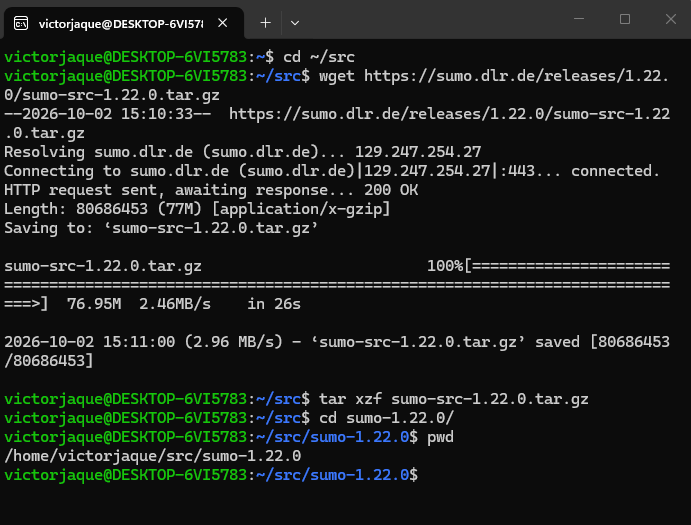
3.3 Definir SUMO_HOME
Ahora tienes que definir SUMO_HOME, una variable que indica dónde está la carpeta de SUMO. La guía de SUMO pide definirla antes de compilar. También vas a agregar la carpeta bin de SUMO al PATH, para que la terminal encuentre el programa sumo desde cualquier carpeta: Veins arranca SUMO por su nombre, sumo.
Las dos líneas se guardan al final de ~/.profile, un archivo que Ubuntu lee cada vez que abres una terminal. Así quedan definidas en todas tus terminales, no solo en la actual.
Para eso, en la misma terminal, dentro de ~/src/sumo-1.22.0, ejecuta los siguientes comandos:
echo 'export SUMO_HOME="$HOME/src/sumo-1.22.0"' >> ~/.profile
echo 'export PATH="$SUMO_HOME/bin:$PATH"' >> ~/.profile
tail -n 2 ~/.profile
Fuente:
- Guía de compilación de SUMO 1.22.0 para Linux, sección Definition of SUMO_HOME: la línea
export SUMO_HOME=..., y guardarla al final de~/.profilepara que quede definida en todas las sesiones. La guía escribe la ruta como/home/<user>/sumo-<version>; aquí va$HOME/src/sumo-1.22.0, la ruta que mostrópwden el paso 3.2. - Agregado en este manual:
- Escribir las líneas con
echo … >>, en vez de abrir~/.profilecon un editor. El resultado es el mismo: la línea queda al final del archivo. - La línea del PATH. La guía solo dice que SUMO se ejecuta desde su carpeta
bin; el PATH hace falta porque Veins arranca SUMO con el comandosumo(veins_launchdde Veins 5.3.1, opción--command, que por defecto essumo). tail -n 2 ~/.profile, para ver las dos líneas agregadas.
- Escribir las líneas con
Así debería verse tu terminal:
victorjaque@DESKTOP-6VI5783:~/src/sumo-1.22.0$ echo 'export SUMO_HOME="$HOME/src/sumo-1.22.0"' >> ~/.profile
victorjaque@DESKTOP-6VI5783:~/src/sumo-1.22.0$ echo 'export PATH="$SUMO_HOME/bin:$PATH"' >> ~/.profile
victorjaque@DESKTOP-6VI5783:~/src/sumo-1.22.0$ tail -n 2 ~/.profile
export SUMO_HOME="$HOME/src/sumo-1.22.0"
export PATH="$SUMO_HOME/bin:$PATH"
Los dos echo no muestran nada. tail muestra las dos últimas líneas de ~/.profile: deben ser las dos que agregaste.
Ejemplo real: las dos líneas agregadas a ~/.profile en el equipo de referencia
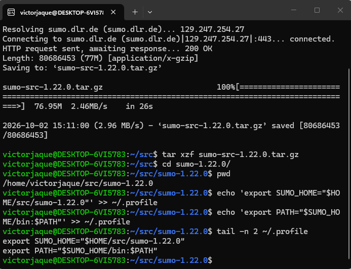
Ahora cierra la terminal y abre una nueva, para que Ubuntu lea ~/.profile con las líneas nuevas. En la terminal nueva, ejecuta el siguiente comando:
Fuente: guía de compilación de SUMO 1.22.0 para Linux, sección Definition of SUMO_HOME: después de editar ~/.profile hay que reiniciar la sesión, y se comprueba con echo $SUMO_HOME.
Así debería verse tu terminal:
Si muestra la ruta de la carpeta de SUMO, SUMO_HOME quedó definido.
Ejemplo real: SUMO_HOME en una terminal nueva del equipo de referencia
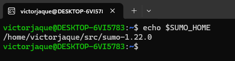
3.4 Instalar los paquetes de Python
Ahora tienes que instalar los paquetes de Python que pide la guía de SUMO. Son para las herramientas de Python de SUMO (la carpeta tools/), que netedit abre desde su menú; según la guía, la compilación los usa para preparar esas herramientas.
La guía da dos comandos: primero uno con apt y después uno con pip. En Ubuntu 24.04 solo funciona el de apt, como se explica más abajo.
Primero instala los paquetes con apt. sudo te pide tu contraseña y después apt pregunta Do you want to continue? [Y/n]: escribe Y y presiona Enter.
Para eso, en una terminal de Ubuntu, nueva o la que ya tengas abierta, ejecuta el siguiente comando:
sudo apt-get install python3-pyproj python3-rtree python3-pandas flake8 python3-autopep8 python3-pulp python3-ezdxf
Fuente: guía de compilación de SUMO 1.22.0 para Linux, sección Installing Python packages for the tools.
Así debería verse tu terminal (inicio y final, abreviado):
victorjaque@DESKTOP-6VI5783:~$ sudo apt-get install python3-pyproj python3-rtree python3-pandas flake8 python3-autopep8 python3-pulp python3-ezdxf
[sudo] password for victorjaque:
Reading package lists... Done
Building dependency tree... Done
Reading state information... Done
The following additional packages will be installed:
blt coinor-cbc coinor-libcbc3.1 coinor-libcgl1 coinor-libclp1 coinor-libcoinutils3v5 coinor-libosi1v5 fonts-lyx isympy-common isympy3 ...
...
Setting up python3-ezdxf (1.1.3-1) ...
Setting up python3-matplotlib (3.6.3-1ubuntu5) ...
Processing triggers for libc-bin (2.39-0ubuntu8.9) ...
Processing triggers for man-db (2.12.0-4build2) ...
Processing triggers for fontconfig (2.15.0-1.1ubuntu2) ...
victorjaque@DESKTOP-6VI5783:~$
En el equipo de referencia instaló 77 paquetes y terminó sin ningún mensaje que empiece con E:.
Ejemplo real: el inicio de la instalación en el equipo de referencia
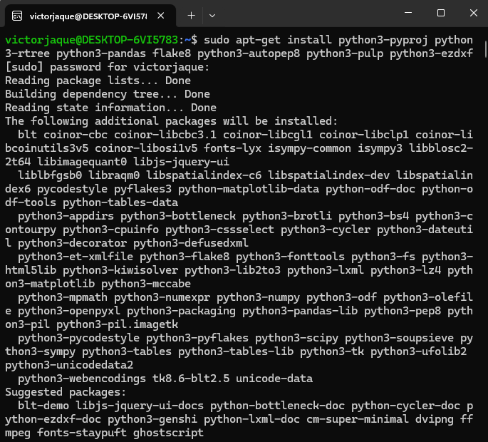
Después, la guía de SUMO pide instalar el resto de los paquetes con pip, desde dos listas que vienen en la carpeta de SUMO (tools/requirements.txt y tools/req_dev.txt). En Ubuntu 24.04 ese comando falla y no instala nada.
Los comandos que siguen no son necesarios para instalar SUMO: puedes saltarlos e ir directo al paso 3.5. Se dejan en el manual solo para mostrar que la guía pide este paso pero que en Ubuntu 24.04 no se puede hacer. En el equipo de referencia se ejecutaron para documentar el error, que es inofensivo.
Si quieres comprobarlo, en la misma terminal ejecuta los siguientes comandos:
Fuente: guía de compilación de SUMO 1.22.0 para Linux, sección Installing Python packages for the tools. El cd lo agrega este manual, porque las dos listas están dentro de la carpeta de SUMO. Estos comandos son solo para comprobar el error: no instalan ni cambian nada.
Error: externally-managed-environment
Cuándo aparece: al ejecutar el pip de la guía de SUMO en Ubuntu 24.04.
Qué significa: Ubuntu 24.04 no deja instalar paquetes con pip en el Python del sistema. El propio mensaje propone usar apt; el comando anterior ya instaló con apt los paquetes que indica la guía. pip no instala nada.
victorjaque@DESKTOP-6VI5783:~/src/sumo-1.22.0$ python3 -m pip install -r tools/requirements.txt -r tools/req_dev.txt
error: externally-managed-environment
× This environment is externally managed
╰─> To install Python packages system-wide, try apt install
python3-xyz, where xyz is the package you are trying to
install.
...
Ejemplo real: el final del apt-get y el error de pip en el equipo de referencia
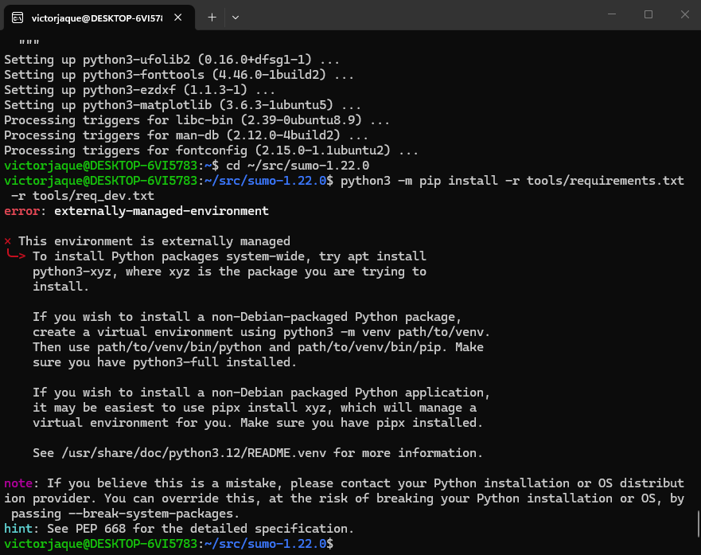
Qué hacer: nada más, sigue con el paso 3.5
Con los paquetes de apt basta para este trabajo:
- SUMO compila sin los paquetes de
pip. Así lo hace el propio equipo de SUMO: en sus pruebas automáticas de la versión 1.22.0, sobre Ubuntu 24.04, compila SUMO antes de instalar esos paquetes (linux.yml). - Veins no los necesita para arrancar SUMO: el programa con el que lo arranca (
veins_launchd) solo usa módulos que vienen con Python. - Lo único que se pierde son las herramientas de Python de SUMO que necesitan algún paquete que no quedó instalado. Tres de esos paquetes no existen en Ubuntu:
fmpy,ortoolsypandas_read_xml.
¿Puede dar problemas más adelante?
En principio no: SUMO compila y Veins lo arranca sin estos paquetes.
Solo fallaría una herramienta de Python de SUMO que use uno de los paquetes que faltan, por ejemplo las de tools/drt/, que usan ortools. En ese caso aparece el error No module named …. La solución es instalar ese paquete en un entorno virtual de Python, como propone el mensaje de error de pip.
3.5 Compilar
Ahora tienes que compilar SUMO. Igual que OMNeT++, se hace en dos etapas: primero cmake -B build . configura, es decir revisa qué hay instalado y prepara la carpeta build, y después cmake --build construye los programas de SUMO.
Hazlo en una terminal nueva, sin cargar el entorno de OMNeT++ (la línea no debe empezar con (omnetpp/.venv)): si está cargado, CMake usa el Python de OMNeT++, que no ve los paquetes que instalaste en el paso 3.4.
Para eso, abre una terminal de Ubuntu nueva y ejecuta los siguientes comandos:
Fuente: guía de compilación de SUMO 1.22.0 para Linux, sección Building the SUMO binaries with cmake, que indica ejecutar cmake -B build . en la carpeta de SUMO. La terminal nueva la agrega este manual: según la documentación de CMake, si hay un entorno virtual de Python activo, CMake usa primero ese Python.
Así debería verse tu terminal (inicio y final, abreviado):
victorjaque@DESKTOP-6VI5783:~$ cd ~/src/sumo-1.22.0
victorjaque@DESKTOP-6VI5783:~/src/sumo-1.22.0$ cmake -B build .
-- Setting build type to 'Release' as none was specified.
-- The CXX compiler identification is GNU 13.3.0
-- The C compiler identification is GNU 13.3.0
...
-- Found ccache: /usr/bin/ccache
...
-- Found Python: /usr/bin/python3 (found version "3.12.3") found components: ...
...
-- Found Git: /usr/bin/git (found version "2.43.0")
-- Enabled features: Linux-6.18.33.2-microsoft-standard-WSL2 x86_64 GNU 13.3.0 Release FMI Proj GUI Intl SWIG Eigen GDAL GL2PS
-- Configuring done (7.5s)
-- Generating done (0.1s)
-- Build files have been written to: /home/victorjaque/src/sumo-1.22.0/build
- Build files have been written to indica que la configuración terminó bien. En el equipo de referencia tardó unos 8 segundos.
Found Python: /usr/bin/python3confirma que CMake usa el Python de Ubuntu.
Ejemplo real: así empieza cmake -B build . en el equipo de referencia
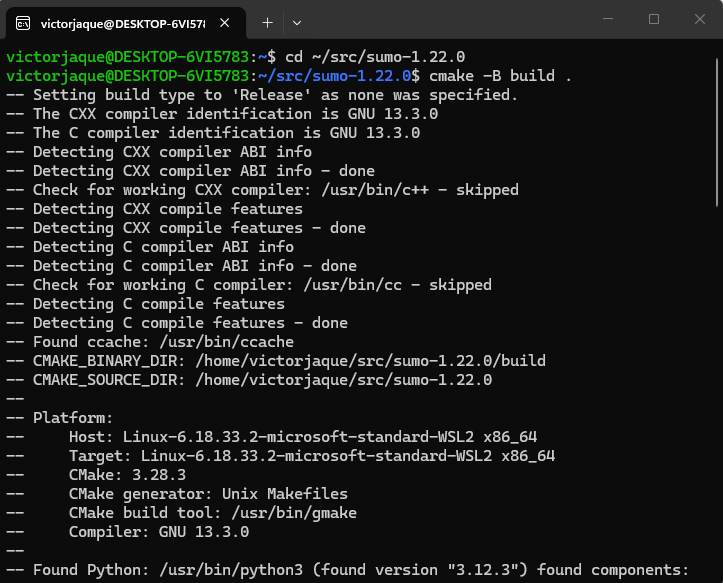
Cuando termine, en la misma terminal, dentro de ~/src/sumo-1.22.0, ejecuta el siguiente comando:
Fuente: guía de compilación de SUMO 1.22.0 para Linux, sección Building the SUMO binaries with cmake. El $(nproc) también es de la guía: escribe la cantidad de núcleos (28 en el equipo de referencia), para compilar en paralelo.
Así debería verse tu terminal (inicio y final, abreviado):
victorjaque@DESKTOP-6VI5783:~/src/sumo-1.22.0$ cmake --build build -j $(nproc)
[ 0%] Building CXX object src/utils/xml/CMakeFiles/utils_xml.dir/CommonXMLStructure.cpp.o
[ 0%] Building CXX object src/microsim/engine/CMakeFiles/microsim_engine.dir/EngineParameters.cpp.o
[ 0%] Generating version.h
...
[ 99%] Linking CXX executable /home/victorjaque/src/sumo-1.22.0/bin/netedit
[ 99%] Built target netedit
...
[100%] Linking CXX shared module /home/victorjaque/src/sumo-1.22.0/tools/libsumo/_libsumo.so
[100%] Built target libsumo
victorjaque@DESKTOP-6VI5783:~/src/sumo-1.22.0$
- Terminó bien cuando aparece
[100%] Built target …y vuelve la líneavictorjaque@...:~/src/sumo-1.22.0$. - Los programas de SUMO quedan en
~/src/sumo-1.22.0/bin, por ejemplosumo,sumo-guiynetedit. En el equipo de referencia tardó unos 3 minutos y medio.
Ejemplo real: así termina cmake -B build . y empieza cmake --build en el equipo de referencia
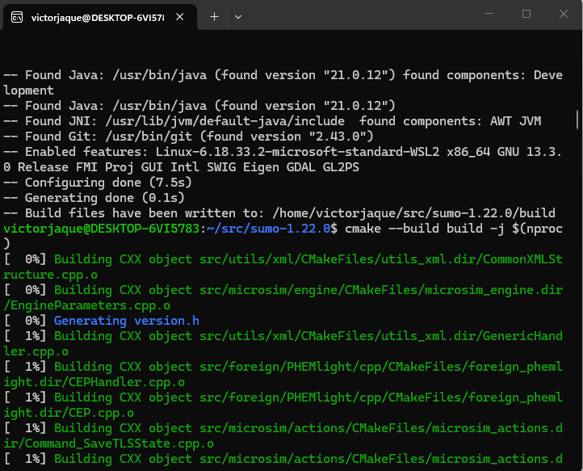
Ejemplo real: así termina cmake --build en el equipo de referencia
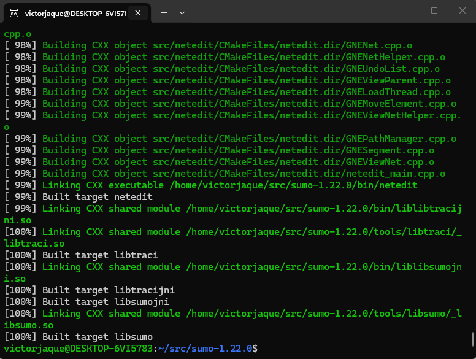
La guía de SUMO sigue con Installing the SUMO binaries, un paso opcional que copia los programas a otra carpeta. Aquí no se hace: SUMO se usa desde bin, que agregaste al PATH en el paso 3.3.
3.6 Verificar
Ahora comprueba que el comando sumo, con el que Veins arranca SUMO (paso 3.3), es el que compilaste y que su versión es 1.22.0.
En una terminal de Ubuntu, nueva o la que ya tengas abierta, ejecuta los siguientes comandos:
Fuente: which sumo lo usa el FAQ de Plexe para comprobar qué SUMO se ejecuta. La opción --version está en la documentación de SUMO 1.22.0, página sumo, sección Report. Usarlos para verificar la instalación lo agrega este manual: ni la guía de Plexe ni la de SUMO traen este paso.
Así debería verse tu terminal (abreviado):
victorjaque@DESKTOP-6VI5783:~$ which sumo
/home/victorjaque/src/sumo-1.22.0/bin/sumo
victorjaque@DESKTOP-6VI5783:~$ sumo --version
Eclipse SUMO sumo Version 1.22.0
Build features: Linux-6.18.33.2-microsoft-standard-WSL2 x86_64 GNU 13.3.0 Release FMI Proj GUI Intl SWIG Eigen GDAL GL2PS
Copyright (C) 2001-2025 German Aerospace Center (DLR) and others; https://sumo.dlr.de
Eclipse SUMO sumo Version 1.22.0 is part of SUMO.
...
which sumomuestra que la terminal usa el SUMO que compilaste, en~/src/sumo-1.22.0/bin.sumo --versionconfirma la versión 1.22.0. El resto de la salida es el texto de la licencia de SUMO.
Ejemplo real: which sumo y sumo --version en el equipo de referencia
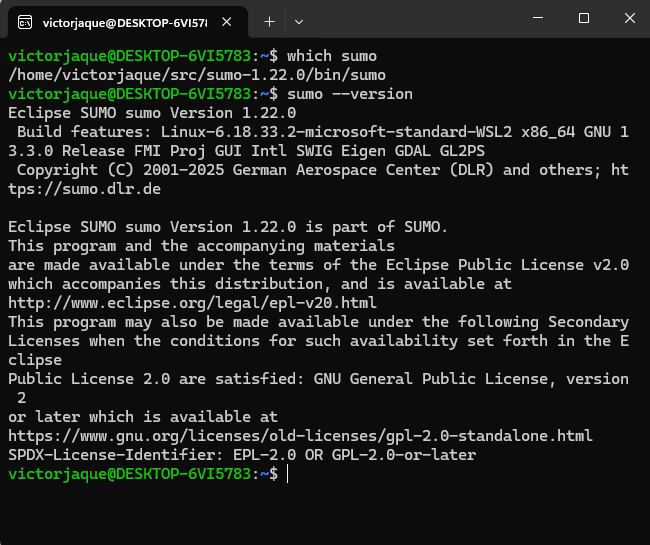
3.7 Recompilar después de modificar SUMO
Cuando modificas el código de SUMO, por ejemplo un controlador, los programas que ya compilaste (sumo, sumo-gui y los demás) no cambian solos. Hay que volver a compilar para que incluyan tu cambio.
No hace falta compilar SUMO entero otra vez. Basta con ejecutar make dentro de la carpeta build. make revisa qué archivos cambiaron desde la última compilación, recompila solo esos y los que dependen de ellos, y vuelve a armar los programas que los usan. Si cambiaste un archivo .cpp, recompila solo ese. Si cambiaste un .h, recompila todos los archivos que lo incluyen.
En una terminal de Ubuntu, nueva o la que ya tengas abierta, ejecuta los siguientes comandos:
Fuente: guía de compilación de SUMO 1.22.0 para Linux, sección (Frequent) Rebuilds: entrar a la carpeta build y volver a ejecutar make -j $(nproc). La explicación de cómo make recompila solo lo que cambió la agrega este manual; las guías no la incluyen.
Así debería verse tu terminal (inicio y final, abreviado):
victorjaque@DESKTOP-6VI5783:~$ cd ~/src/sumo-1.22.0/build
victorjaque@DESKTOP-6VI5783:~/src/sumo-1.22.0/build$ make -j $(nproc)
[ 0%] Built target install_dll
[ 0%] Built target generate-version-h
[ 1%] Built target foreign_tcpip
...
[ 96%] Built target sumo
[ 96%] Built target sumo-gui
...
[100%] Built target libsumofmi2
[100%] Built target prepfmi
[100%] Built target fmi
victorjaque@DESKTOP-6VI5783:~/src/sumo-1.22.0/build$
- Terminó bien cuando aparece
[100%] Built target …y vuelve la líneavictorjaque@...:~/src/sumo-1.22.0/build$. - Como no se cambió el código, no compila ningún archivo: solo aparecen líneas Built target, sin Building CXX object.
Ejemplo real: así empieza make en el equipo de referencia
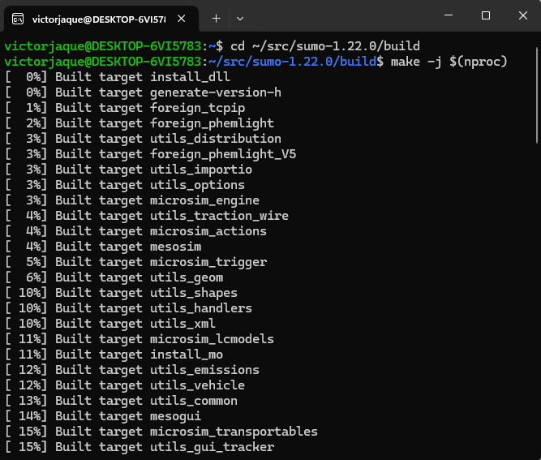
Ejemplo real: así termina make en el equipo de referencia
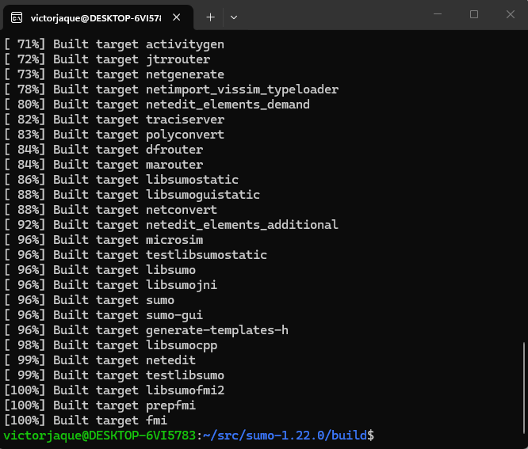
Si la recompilación da problemas
Si actualizaste librerías de Ubuntu o la compilación falla, la guía de SUMO aconseja compilar desde cero: borra la carpeta build y repite el paso 3.5. Así CMake vuelve a buscar las librerías en vez de usar las que guardó.
Fuente: guía de compilación de SUMO 1.22.0 para Linux, sección (Frequent) Rebuilds.
Con esto, SUMO está instalado y puedes pasar al paso 4.
Paso 4: Veins 5.3.1
Ahora vamos a instalar Veins 5.3.1. Primero lo vamos a descargar (paso 4.1) y después lo vamos a compilar (paso 4.2). Antes de empezar, veamos qué es Veins y para qué lo necesitas.
Hasta aquí instalaste dos simuladores independientes: OMNeT++, que simula redes de comunicación, y SUMO, que simula el tráfico. Veins es lo que los conecta. Mientras corre una simulación, SUMO mueve los vehículos por las calles y OMNeT++ simula los mensajes que esos vehículos se envían entre sí. Los dos simuladores quedan conectados durante toda la simulación y en ambos sentidos: lo que pasa en la red también puede cambiar el tráfico, por ejemplo cuando un vehículo cambia de ruta al recibir un mensaje.
Además de conectar los dos simuladores, Veins trae los modelos de la comunicación inalámbrica entre vehículos, como el estándar IEEE 802.11p.
Plexe, que instalarás en el paso 5, se construye sobre Veins: le agrega la conducción en pelotón (platooning), y la comunicación 802.11p que usa es la de Veins. Por eso Veins va antes que Plexe: al compilar Plexe hay que indicarle dónde está la carpeta de Veins.
Fuente: sitio oficial de Veins (sección How does Veins work?) y su página de características; guía oficial de Plexe, Compatibility notes y Step 2.
4.1 Descargar
La guía de Plexe ofrece dos formas de bajar Veins 5.3.1: su archivo ZIP o clonar su repositorio con git. Este manual usa git, porque en este trabajo se modifica el código de Veins: git muestra qué cambiaste respecto del original y, según el FAQ de Plexe, permite pasar a una versión nueva sin rehacer esos cambios a mano. Además, la carpeta queda como ~/src/veins, el nombre que usan los comandos de la guía.
En una terminal de Ubuntu, nueva o la que ya tengas abierta, ejecuta los siguientes comandos:
Fuente: guía oficial de Plexe, Step 2: Install Plexe and Veins, que ofrece clonar Veins desde su repositorio en GitHub como alternativa al ZIP, en la carpeta ~/src/. El comando no está en la guía: es el uso estándar de git clone.
Así debería verse tu terminal:
victorjaque@DESKTOP-6VI5783:~$ cd ~/src
git clone https://github.com/sommer/veins.git
Cloning into 'veins'...
remote: Enumerating objects: 26130, done.
remote: Counting objects: 100% (620/620), done.
remote: Compressing objects: 100% (222/222), done.
remote: Total 26130 (delta 530), reused 398 (delta 398), pack-reused 25510 (from 3)
Receiving objects: 100% (26130/26130), 16.66 MiB | 2.65 MiB/s, done.
Resolving deltas: 100% (19160/19160), done.
- Terminó bien cuando aparece
Resolving deltas: 100% … done.y vuelve la línea que termina en~/src$. - En el equipo de referencia los dos comandos se pegaron juntos en la terminal; por eso
git cloneaparece sinvictorjaque@...$delante.
git clone deja la versión en desarrollo de Veins, que no es la 5.3.1. En el repositorio, cada versión está marcada con una etiqueta; la de esta versión es veins-5.3.1. Ahora tienes que cambiarte a ella.
Para eso, en la misma terminal, dentro de ~/src, ejecuta los siguientes comandos:
Fuente: la versión 5.3.1 y su etiqueta son las que enlaza la guía de Plexe (Step 2). Los comandos los agrega este manual: git checkout cambia a esa versión y git describe --tags muestra en qué versión quedaste.
Así debería verse tu terminal (abreviado):
victorjaque@DESKTOP-6VI5783:~/src$ cd veins
git checkout veins-5.3.1
git describe --tags
Note: switching to 'veins-5.3.1'.
You are in 'detached HEAD' state. You can look around, make experimental
...
HEAD is now at 6571085f bump version to 5.3.1
veins-5.3.1
- El aviso sobre detached HEAD es normal: significa que quedaste fijo en la versión 5.3.1 y no en una rama. No hagas nada de lo que sugiere.
git describe --tagsrespondeveins-5.3.1: quedaste en la versión correcta.
Ejemplo real: la descarga de Veins y el cambio a la versión 5.3.1 en el equipo de referencia
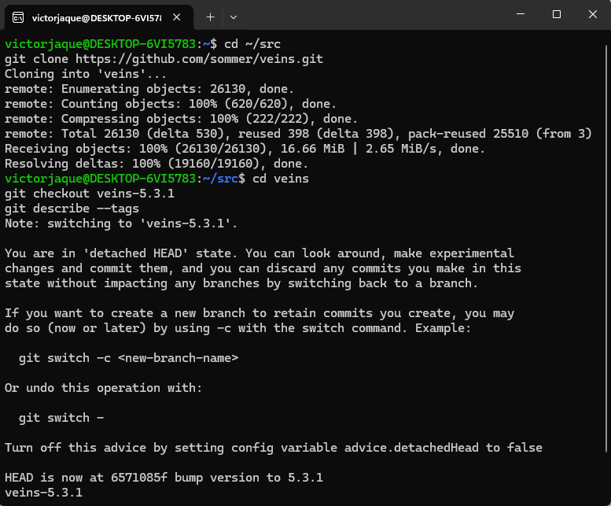
4.2 Compilar
Ahora vamos a compilar Veins, es decir, a traducir el código que descargaste en el paso 4.1 a código que el computador puede ejecutar. El resultado es la biblioteca de Veins, libveins.so: un archivo con todo Veins ya compilado, que Plexe usará al compilarse en el paso 5.
Igual que OMNeT++ en el paso 2.3, se hace en dos etapas: primero ./configure crea el Makefile, el archivo con las instrucciones de compilación, y después make sigue esas instrucciones y compila.
Antes hay que cargar el entorno de OMNeT++. El ./configure de Veins usa opp_makemake, una herramienta de OMNeT++, y la terminal solo la encuentra después de source setenv.
En una terminal de Ubuntu, nueva o la que ya tengas abierta, ejecuta los siguientes comandos:
Fuente: guía oficial de Plexe: Step 1, con los mismos comandos del paso 2.2, y su sección de macOS, Building on Apple processors, que indica compilar Veins desde la misma terminal donde se cargó setenv. Que ./configure usa opp_makemake está en el script configure de Veins 5.3.1.
Así debería verse tu terminal:
victorjaque@DESKTOP-6VI5783:~$ cd ~/src/omnetpp-6.2.0
source setenv
Activating python virtual environment in '/home/victorjaque/src/omnetpp-6.2.0/.venv'
Environment for 'omnetpp-6.2.0' in directory '/home/victorjaque/src/omnetpp-6.2.0' is ready.
Environment for 'omnetpp-6.2.0' … is ready indica que el entorno quedó cargado. Desde aquí, la línea de la terminal empieza con (omnetpp/.venv).
Ahora configura Veins. En la misma terminal, ejecuta los siguientes comandos:
Fuente: guía oficial de Plexe, Step 2: Install Plexe and Veins.
Así debería verse tu terminal:
(omnetpp/.venv) victorjaque@DESKTOP-6VI5783:~/src/omnetpp-6.2.0$ cd ~/src/veins
./configure
Creating Makefile in /home/victorjaque/src/veins/src...
Es la única línea que muestra ./configure: indica que creó el Makefile en la carpeta src de Veins.
Ahora compila. En la misma terminal, dentro de ~/src/veins, ejecuta el siguiente comando:
Fuente: guía oficial de Plexe, Step 2, que indica make -j <number of cores of your PC>. El $(nproc) lo agrega este manual, igual que en el paso 2.3.2: escribe solo la cantidad de núcleos (28 en el equipo de referencia).
Así debería verse tu terminal (inicio y final, abreviado):
(omnetpp/.venv) victorjaque@DESKTOP-6VI5783:~/src/veins$ make -j$(nproc)
Creating script "bin/veins_run"
make[1]: Entering directory '/home/victorjaque/src/veins/src'
MSGC: veins/base/messages/AirFrame.msg
MSGC: veins/common.msg
...
veins/modules/mac/ieee80211p/Mac1609_4.cc:529:69: warning: format specifies type 'int' but the argument has type 'Channel' [-Wformat]
529 | throw cRuntimeError("This Service Channel doesnt exit: %d", cN);
...
1 warning generated.
...
veins/modules/messages/TraCITrafficLightMessage_m.cc
Creating shared library: ../out/clang-debug/src/libveins_dbg.so
make[1]: Leaving directory '/home/victorjaque/src/veins/src'
(omnetpp/.venv) victorjaque@DESKTOP-6VI5783:~/src/veins$
- Terminó bien cuando aparece Creating shared library y vuelve la línea que termina en
~/src/veins$. - Compila dos veces, igual que OMNeT++: primero en modo release y después en modo debug, como indica el
Makefilede Veins. Por eso quedan dos bibliotecas en~/src/veins/src:libveins.soylibveins_dbg.so. - En el equipo de referencia tardó unos 15 segundos.
Aviso: format specifies type 'int' but the argument has type 'Channel'
En el equipo de referencia, make mostró este aviso (warning) en el archivo Mac1609_4.cc de Veins, línea 529. El compilador avisa que esa línea usa %d, que espera un número entero (int), con un valor de tipo Channel. Es un aviso, no un error: la compilación siguió y terminó bien. No hay que hacer nada.
Ejemplo real: la carga del entorno, ./configure y el inicio de make en el equipo de referencia
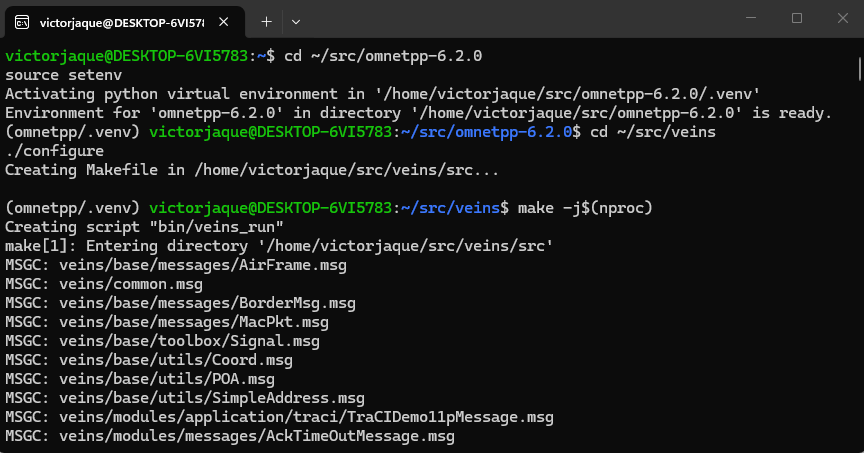
Ejemplo real: así termina make en el equipo de referencia
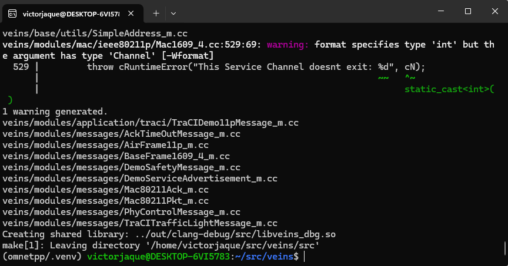
Con esto, Veins está instalado y puedes pasar al paso 5.
Paso 5: Plexe 3.2
Ahora vamos a instalar Plexe 3.2, que agrega la simulación de pelotones de vehículos (platooning) sobre SUMO y Veins. Primero lo vamos a descargar (paso 5.1) y después lo vamos a compilar (paso 5.2).
5.1 Descargar
Plexe se baja con git, igual que Veins en el paso 4.1. La página de descargas de Plexe también ofrece un ZIP, pero no lo recomienda (not recommended).
En una terminal de Ubuntu, nueva o la que ya tengas abierta, ejecuta los siguientes comandos:
Fuente: página oficial de descargas de Plexe, Through the git repositories. Son sus mismos dos comandos.
Así debería verse tu terminal:
victorjaque@DESKTOP-6VI5783:~$ cd ~/src
git clone https://github.com/michele-segata/plexe.git
Cloning into 'plexe'...
remote: Enumerating objects: 30656, done.
remote: Counting objects: 100% (1057/1057), done.
remote: Compressing objects: 100% (457/457), done.
remote: Total 30656 (delta 820), reused 694 (delta 587), pack-reused 29599 (from 2)
Receiving objects: 100% (30656/30656), 17.74 MiB | 6.24 MiB/s, done.
Resolving deltas: 100% (22968/22968), done.
Terminó bien cuando aparece Resolving deltas: 100% … done. y vuelve la línea que termina en ~/src$.
git clone deja la última versión del repositorio. Para quedar fijo en la 3.2, cámbiate a su etiqueta, plexe-3.2.
En la misma terminal, dentro de ~/src, ejecuta los siguientes comandos:
Fuente: la etiqueta plexe-3.2 la indica la página oficial de descargas de Plexe (Through the git repositories). Los comandos los agrega este manual, como en el paso 4.1 (git checkout, git describe).
Así debería verse tu terminal (abreviado):
victorjaque@DESKTOP-6VI5783:~/src$ cd plexe
git checkout plexe-3.2
git describe --tags
Note: switching to 'plexe-3.2'.
You are in 'detached HEAD' state. You can look around, make experimental
...
HEAD is now at c2d70aff bump to 3.2
plexe-3.2
El aviso sobre detached HEAD es normal, como en el paso 4.1. La última línea, plexe-3.2, confirma la versión.
Ejemplo real: la descarga de Plexe y el cambio a la versión 3.2 en el equipo de referencia
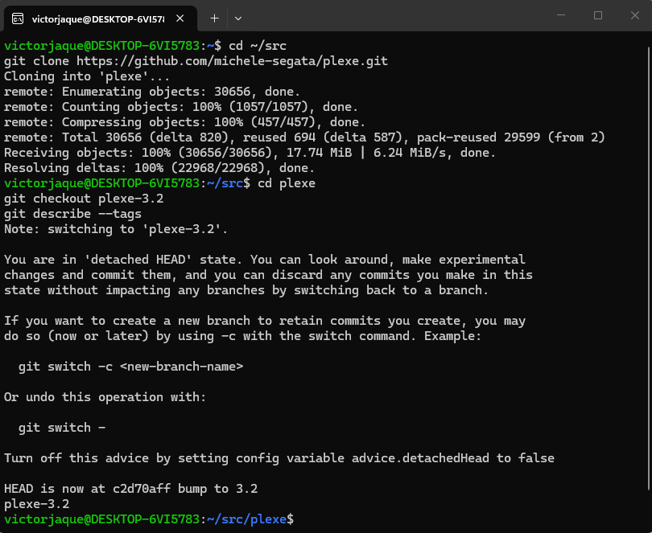
5.2 Compilar
Ahora vamos a compilar Plexe, igual que Veins en el paso 4.2: con el entorno de OMNeT++ cargado, primero ./configure y después make. La única diferencia es que a ./configure hay que indicarle dónde está Veins (--with-veins=../veins), porque Plexe se compila enlazado a Veins.
En la misma terminal, ejecuta los siguientes comandos:
Fuente: guía oficial de Plexe, Step 1, como en el paso 4.2.
La salida es la misma del paso 4.2.
En la misma terminal, ejecuta los siguientes comandos:
Fuente: guía oficial de Plexe, Step 2: Install Plexe and Veins.
Así debería verse tu terminal:
(omnetpp/.venv) victorjaque@DESKTOP-6VI5783:~/src/omnetpp-6.2.0$ cd ~/src/plexe
./configure --with-veins=../veins
Determining Veins version.
Found Veins version 5.3.1. Okay.
Creating Makefile in /home/victorjaque/src/plexe/src...
Configure done. You can now run 'make'.
Found Veins version 5.3.1. Okay. indica que encontró Veins, y Configure done que la configuración terminó bien.
Ejemplo real: la carga del entorno y ./configure en el equipo de referencia
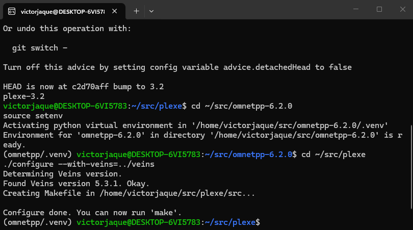
En la misma terminal, dentro de ~/src/plexe, ejecuta el siguiente comando:
Fuente: guía oficial de Plexe, Step 2. El $(nproc) lo agrega este manual, como en el paso 4.2.
Así debería verse tu terminal (inicio y final, abreviado):
(omnetpp/.venv) victorjaque@DESKTOP-6VI5783:~/src/plexe$ make -j$(nproc)
Creating script "bin/plexe_run"
make[1]: Entering directory '/home/victorjaque/src/plexe/src'
MSGC: plexe/messages/HelloPlexeMsg.msg
MSGC: plexe/messages/InterferingBeacon.msg
...
plexe/messages/UpdatePlatoonFormationAck_m.cc
Creating shared library: ../out/clang-debug/src/libplexe_dbg.so
make[1]: Leaving directory '/home/victorjaque/src/plexe/src'
(omnetpp/.venv) victorjaque@DESKTOP-6VI5783:~/src/plexe$
Terminó bien cuando aparece Creating shared library y vuelve la línea que termina en ~/src/plexe$. Igual que Veins, compila en release y en debug: quedan libplexe.so y libplexe_dbg.so en ~/src/plexe/src. En el equipo de referencia tardó unos 8 segundos.
Ejemplo real: así empieza make en el equipo de referencia
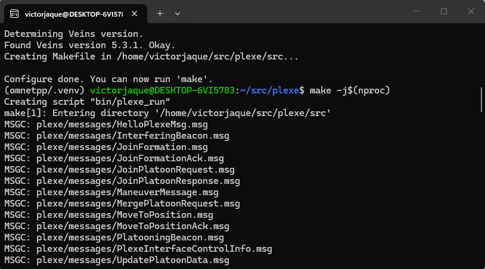
Ejemplo real: así termina make en el equipo de referencia
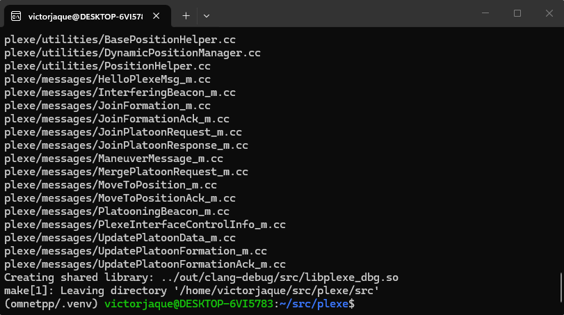
Con esto, Plexe está instalado y puedes pasar al paso 6.
Paso 6: R y Python
Ahora vamos a preparar R y Python, que sirven para extraer y graficar los resultados de las simulaciones. OMNeT++ 6 eliminó su complemento de R, así que los scripts de Plexe para extraer los datos usan una mezcla de R y Python.
Fuente: guía oficial de Plexe, Step 4: Setup up R and Python.
6.1 Librerías de R
Ahora vamos a instalar dos librerías de R: ggplot2 y data.table. R ya quedó instalado en el paso 1.2 (paquete r-base).
En una terminal de Ubuntu, nueva o la que ya tengas abierta, ejecuta el siguiente comando para abrir la consola de R:
Dentro de la consola de R, donde la línea empieza con >, ejecuta:
Fuente: guía oficial de Plexe, Step 4: Setup up R and Python.
R hace dos preguntas. Responde yes a las dos:
- Would you like to use a personal library instead?: R no puede escribir en la carpeta del sistema y ofrece usar una carpeta tuya.
- Would you like to create a personal library … to install packages into?: crea esa carpeta,
~/R/x86_64-pc-linux-gnu-library/4.3.
La guía dice que R también pide elegir un mirror, es decir, el servidor desde donde descarga. En el equipo de referencia no lo pidió: descargó directamente desde cloud.r-project.org.
Así debería verse tu terminal (inicio y final, abreviado):
> install.packages(c('ggplot2', 'data.table'))
Installing packages into ‘/usr/local/lib/R/site-library’
(as ‘lib’ is unspecified)
Warning in install.packages(c("ggplot2", "data.table")) :
'lib = "/usr/local/lib/R/site-library"' is not writable
Would you like to use a personal library instead? (yes/No/cancel) yes
Would you like to create a personal library
‘/home/victorjaque/R/x86_64-pc-linux-gnu-library/4.3’
to install packages into? (yes/No/cancel) yes
also installing the dependencies ‘glue’, ‘cpp11’, ‘farver’, ‘labeling’, ‘R6’, ‘RColorBrewer’, ‘viridisLite’, ‘cli’, ‘gtable’, ‘isoband’, ‘lifecycle’, ‘rlang’, ‘S7’, ‘scales’, ‘vctrs’, ‘withr’
trying URL 'https://cloud.r-project.org/src/contrib/glue_1.8.1.tar.gz'
...
* DONE (ggplot2)
The downloaded source packages are in
‘/tmp/RtmpJGQekE/downloaded_packages’
> q()
Save workspace image? [y/n/c]: n
victorjaque@DESKTOP-6VI5783:~$
- El Warning … is not writable es normal: por eso R ofrece la carpeta personal.
- Terminó bien cuando aparece
* DONE (ggplot2)y vuelve el>. - Para salir de R, escribe
q()y respondencuando pregunte Save workspace image?.
Ejemplo real: el inicio de la instalación en el equipo de referencia
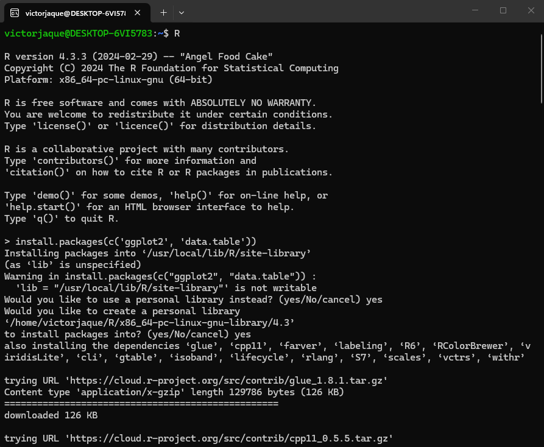
Ejemplo real: así termina la instalación en el equipo de referencia
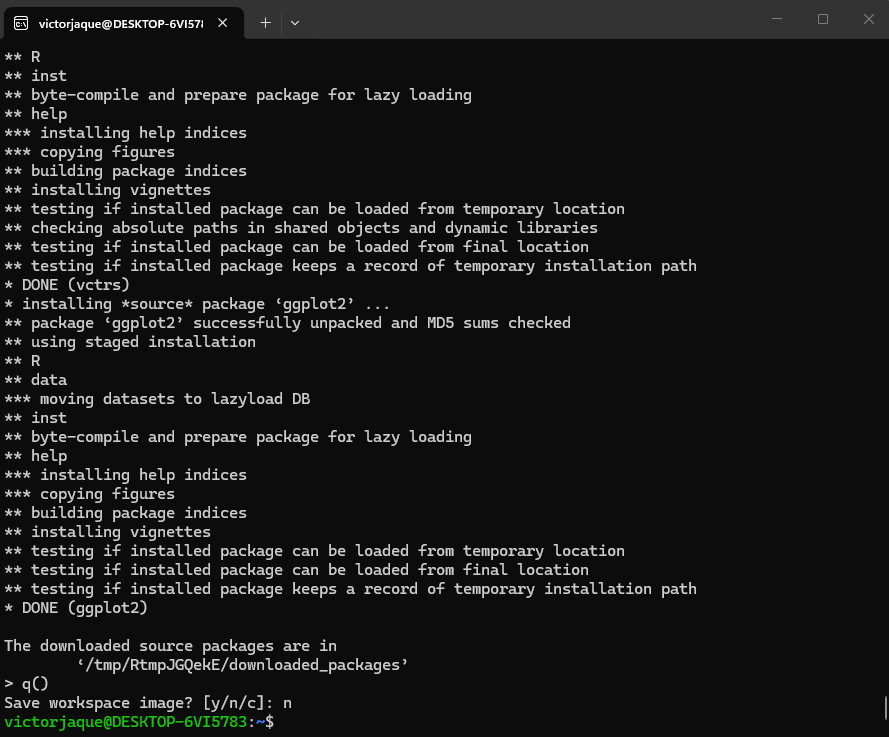
6.2 Paquete de lectura de resultados de OMNeT++
Ahora vamos a instalar el paquete omnetpp de R, que permite a R leer los archivos de resultados de OMNeT++. La guía lo enlaza como archivo comprimido y pide no descomprimirlo.
Primero descárgalo. En una terminal de Ubuntu, nueva o la que ya tengas abierta, ejecuta los siguientes comandos:
Fuente: guía oficial de Plexe, Step 4: Setup up R and Python, que enlaza el archivo. El wget lo agrega este manual para descargarlo desde la terminal.
Así debería verse tu terminal:
victorjaque@DESKTOP-6VI5783:~$ cd ~/src
wget http://plexe.car2x.org/download/omnetpp_0.7-1.tar.gz
--2026-10-05 14:49:56-- http://plexe.car2x.org/download/omnetpp_0.7-1.tar.gz
Resolving plexe.car2x.org (plexe.car2x.org)... 141.76.82.12
Connecting to plexe.car2x.org (plexe.car2x.org)|141.76.82.12|:80... connected.
HTTP request sent, awaiting response... 200 OK
Length: 295715 (289K) [application/x-gzip]
Saving to: ‘omnetpp_0.7-1.tar.gz’
omnetpp_0.7-1.tar.gz 100%[==============================>] 288.78K 336KB/s in 0.9s
2026-10-05 14:49:58 (336 KB/s) - ‘omnetpp_0.7-1.tar.gz’ saved [295715/295715]
Terminó bien cuando aparece saved: el archivo quedó en ~/src.
Ahora instálalo. En la misma terminal, dentro de ~/src, abre R:
Dentro de la consola de R, ejecuta:
Fuente: guía oficial de Plexe, Step 4: Setup up R and Python.
Ejemplo real: la descarga y el inicio de la instalación en el equipo de referencia
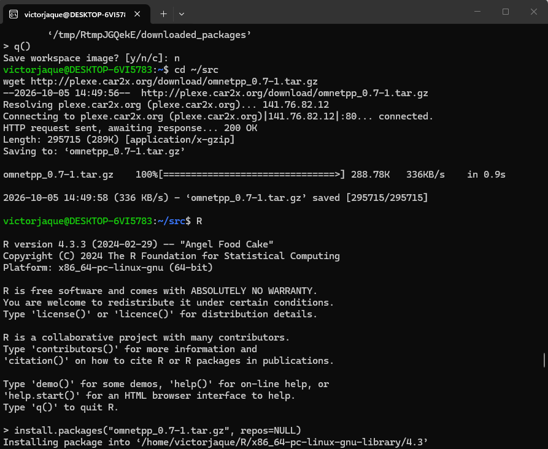
En Ubuntu 24.04 esta instalación falla:
Error: compilation failed for package ‘omnetpp’
Cuándo aparece: al ejecutar install.packages("omnetpp_0.7-1.tar.gz", repos=NULL).
Qué significa: el paquete no compila con un compilador que usa C++17. La guía de Plexe anticipa este problema, aunque cita otro mensaje (no member named 'mem_fun_ref'). En el equipo de referencia el mensaje fue este:
/usr/include/c++/13/bits/stl_tree.h:772:15: error: static assertion failed: comparison object must be invocable as const
...
make: *** [/usr/lib/R/etc/Makeconf:198: scave/resultfilemanager.o] Error 1
ERROR: compilation failed for package ‘omnetpp’
* removing ‘/home/victorjaque/R/x86_64-pc-linux-gnu-library/4.3/omnetpp’
Warning message:
In install.packages("omnetpp_0.7-1.tar.gz", repos = NULL) :
installation of package ‘omnetpp_0.7-1.tar.gz’ had non-zero exit status
> q()
Save workspace image? [y/n/c]: N
Ejemplo real: el error en el equipo de referencia
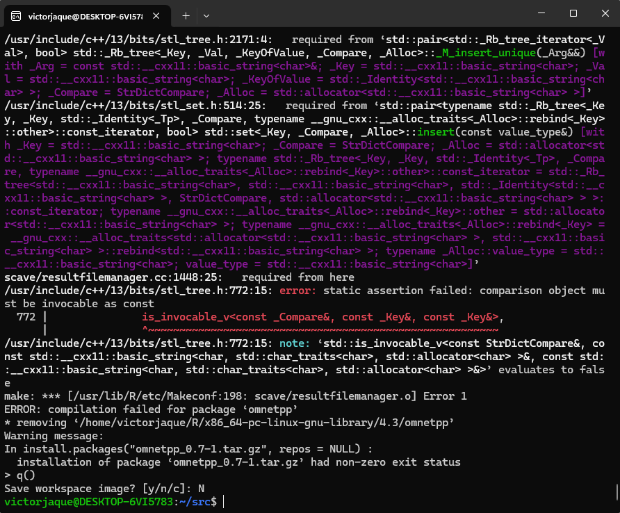
Qué hacer: compilar con C++11
La guía indica agregar la línea CXXFLAGS += -std=c++11 al archivo ~/.R/Makevars. Ese archivo le dice a R con qué opciones compilar los paquetes.
Sal de R con q() y responde n. Después, en la misma terminal, dentro de ~/src, ejecuta los siguientes comandos:
Fuente: la línea y el archivo son de la guía oficial de Plexe, Step 4: Setup up R and Python. Los comandos los agrega este manual: mkdir -p crea la carpeta ~/.R si no existe, echo … >> agrega la línea al archivo y cat lo muestra.
cat debe mostrar la línea CXXFLAGS += -std=c++11.
Ahora repite la instalación. En la misma terminal, dentro de ~/src, abre R y ejecuta:
Así debería verse tu terminal (final, abreviado):
...
installing to /home/victorjaque/R/x86_64-pc-linux-gnu-library/4.3/00LOCK-omnetpp/00new/omnetpp/libs
** R
** data
** demo
** inst
** byte-compile and prepare package for lazy loading
** help
*** installing help indices
** building package indices
** testing if installed package can be loaded from temporary location
** checking absolute paths in shared objects and dynamic libraries
** testing if installed package can be loaded from final location
** testing if installed package keeps a record of temporary installation path
* DONE (omnetpp)
> q()
Save workspace image? [y/n/c]: n
victorjaque@DESKTOP-6VI5783:~/src$
Terminó bien cuando aparece * DONE (omnetpp). Después sal de R con q() y responde n.
Ejemplo real: la línea en ~/.R/Makevars y la nueva instalación en el equipo de referencia
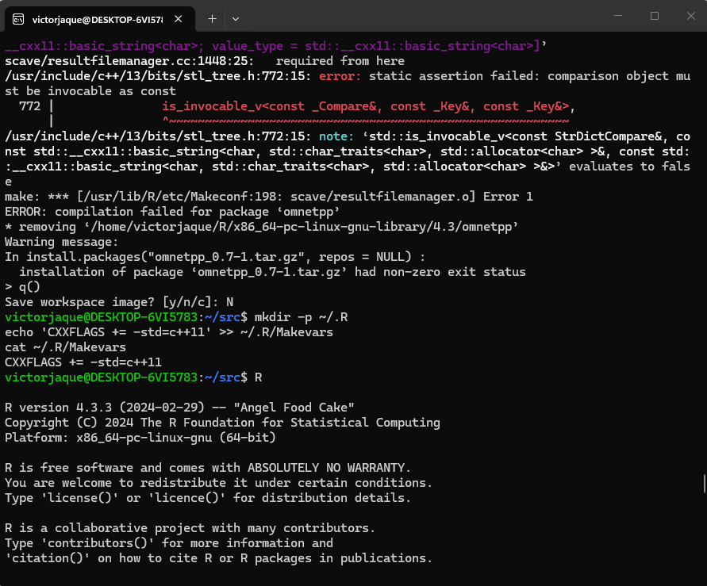
Ejemplo real: así termina la instalación en el equipo de referencia
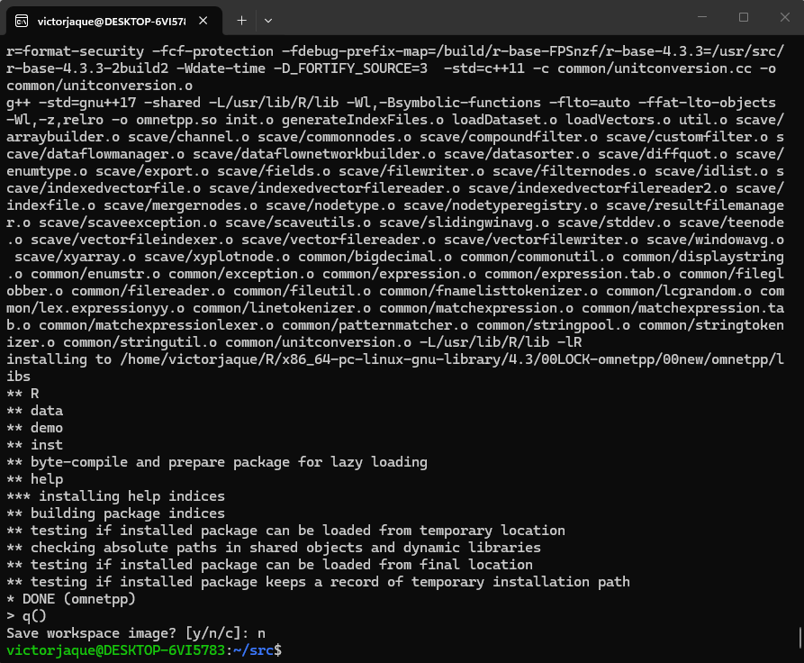
Perfecto: solucionaste el error y el paquete omnetpp quedó instalado. Ahora puedes pasar al paso 6.3.
6.3 Librerías de Python
Ahora vamos a revisar las librerías de Python que piden los scripts de Plexe: pandas, scipy y matplotlib.
La guía pide instalarlas con este comando:
Fuente: guía oficial de Plexe, Step 4: Setup up R and Python.
No necesitas ejecutarlo: en Ubuntu 24.04 falla, y las tres librerías ya están instaladas. En el equipo de referencia se ejecutó para documentar el error, que es inofensivo.
Error: externally-managed-environment
Cuándo aparece: al ejecutar el pip de la guía de Plexe en Ubuntu 24.04.
Qué significa: es el mismo error del paso 3.4: Ubuntu 24.04 no deja instalar paquetes con pip en el Python del sistema. pip no instala nada.
victorjaque@DESKTOP-6VI5783:~$ pip install --user pandas scipy matplotlib
error: externally-managed-environment
× This environment is externally managed
╰─> To install Python packages system-wide, try apt install
python3-xyz, where xyz is the package you are trying to
install.
...
Ejemplo real: el error en el equipo de referencia
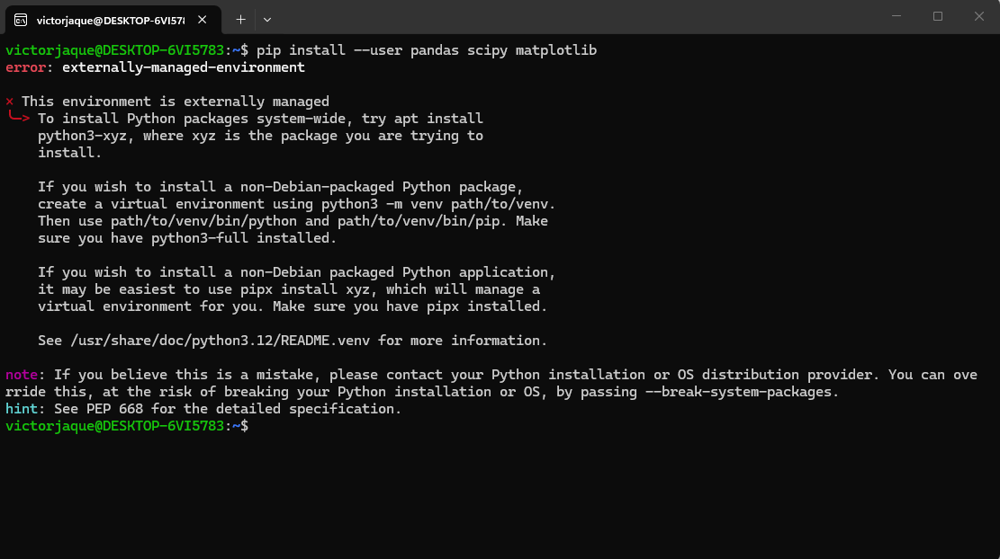
Qué hacer: nada, solo comprobar que ya están
Las tres librerías quedaron instaladas en el paso 2.2, en el entorno de Python de OMNeT++ (.venv): el archivo python/requirements.txt de OMNeT++ 6.2.0 las incluye (requirements.txt). Los scripts de Plexe usan ese mismo entorno: genmakefile.py corre con el Python activo (#!/usr/bin/env python), y source setenv activa el de OMNeT++.
Para comprobarlo, en una terminal de Ubuntu, nueva o la que ya tengas abierta, ejecuta los siguientes comandos:
Fuente: los dos primeros comandos son los del paso 2.2. El tercero lo agrega este manual: pip list muestra los paquetes instalados en el entorno activo, y grep deja solo las tres librerías.
Así debería verse tu terminal:
(omnetpp/.venv) victorjaque@DESKTOP-6VI5783:~/src/omnetpp-6.2.0$ python3 -m pip list | grep -iE "^(pandas|scipy|matplotlib) "
matplotlib 3.11.2
pandas 2.3.3
scipy 1.18.1
Si aparecen las tres líneas, las librerías están instaladas.
Ejemplo real: la comprobación en el equipo de referencia
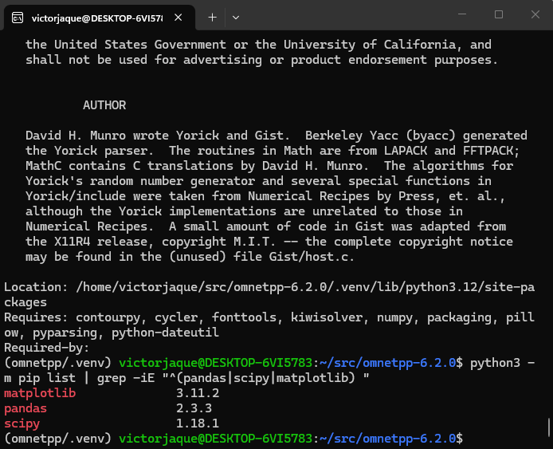
Perfecto: las librerías de Python están listas y terminaste el paso 6. Ahora puedes pasar al paso 7.
Paso 7: Verificación
Ahora vamos a comprobar que la instalación funciona. Para eso vas a correr el ejemplo platooning, que viene con Plexe: en él trabajan juntos OMNeT++, SUMO, Veins y Plexe.
Si todo está bien, vas a ver tres cosas:
- La ventana de SUMO, con un pelotón de 8 autos en la autopista.
- La simulación llega hasta el final sin errores en la terminal.
- Al terminar, quedan archivos de resultados en la carpeta
results.
Primero carga el entorno de OMNeT++. En una terminal de Ubuntu nueva ejecuta los siguientes comandos:
Fuente: guía oficial de Plexe, Step 1: Install OMNeT++, como en el paso 2.2.
Ahora carga el entorno de Plexe. En la misma terminal, ejecuta los siguientes comandos:
Fuente: tutorial oficial de Plexe, Step 0. Building Plexe.
Este setenv deja disponible plexe_run, el programa que corre las simulaciones. Si todo está bien, no muestra nada.
Ahora corre el ejemplo. En la misma terminal, dentro de ~/src/plexe, ejecuta los siguientes comandos:
Fuente: tutorial oficial de Plexe, Running the example.
-c Sinusoidal -r 2 elige el escenario Sinusoidal con el controlador CACC. Según el tutorial, se abre SUMO con una autopista vacía, en t = 1 s aparece el pelotón de 8 autos y la simulación se detiene a los 60 s. En el equipo de referencia tardó alrededor de 1 minuto.
Así debería verse tu terminal (inicio, abreviado):
(omnetpp/.venv) victorjaque@DESKTOP-6VI5783:~/src/plexe$ cd examples/platooning
plexe_run -u Cmdenv -c Sinusoidal -r 2
OMNeT++ Discrete Event Simulation (C) 1992-2025 Andras Varga, OpenSim Ltd.
Version: 6.2.0, build: 250714-83e173e93a, edition: Academic Public License -- NOT FOR COMMERCIAL USE
...
Loading NED files from ../../../veins/src/veins: 44
Loading NED files from ../../src/plexe: 37
Loading NED files from .: 1
Preparing for running configuration Sinusoidal, run #2...
Scenario: $nCars=8, $platoonSize=8, $nLanes=1, $ploegH=0.5, $controller=1, $headway=0.1, $leaderHeadway=1.2, $leaderSpeed=100, $beaconInterval=0.1, $priority=4, $packetSize=200, $sController="CACC", $0=5, $1=0, $repetition=0
...
Running simulation...
** Event #0 t=0 Elapsed: 6e-06s (0m 00s) 0% completed (0% total)
- Loading NED files de Veins, de Plexe y del ejemplo indica que OMNeT++ encontró los tres.
- Scenario muestra los parámetros de la corrida: 8 autos, controlador
CACC.
Ejemplo real: el inicio de la simulación en el equipo de referencia

Ejemplo real: la ventana de SUMO durante la simulación en el equipo de referencia

En el escenario Sinusoidal casi no se nota el movimiento
En este escenario el líder acelera y frena de forma sinusoidal, con una amplitud de 10 km/h en torno a 100 km/h (ver Primera simulación). En el equipo de referencia, en la ventana de SUMO no se notaba bien esa aceleración y ese frenado. En cambio, en el escenario Braking (-c Braking), donde el líder frena a 8 m/s², sí se ve el frenado del pelotón.
Así debería verse tu terminal (final, abreviado):
...
** Event #322665 t=60 Elapsed: 61.8753s (1m 01s) 100% completed (100% total)
Speed: ev/sec=5404.62 simsec/sec=0.987506 ev/simsec=5472.99
Messages: created: 344030 present: 149 in FES: 26
<!> Simulation time limit reached -- at t=60s, event #322665
Calling finish() at end of Run #2...
End.
Terminó bien cuando aparece Simulation time limit reached -- at t=60s y después End.
Al final, revisa los resultados. En la misma terminal, dentro de ~/src/plexe/examples/platooning, ejecuta el siguiente comando:
Fuente: el tutorial oficial indica que los resultados quedan en la carpeta results (Running the example). El comando ls lo agrega este manual para listarlos.
Así debería verse tu terminal:
(omnetpp/.venv) victorjaque@DESKTOP-6VI5783:~/src/plexe/examples/platooning$ ls results
Sinusoidal_1_0.1_0.sca Sinusoidal_1_0.1_0.vci Sinusoidal_1_0.1_0.vec
Deben aparecer tres archivos de resultados de la corrida Sinusoidal.
Ejemplo real: así termina la simulación en el equipo de referencia

Perfecto: Plexe funciona y la instalación está terminada. Para seguir con el ejemplo completo y graficar sus resultados, pasa a Primera simulación.
6 · Otros sistemas
Este manual documenta Ubuntu 24.04 porque es el entorno del laboratorio. Para referencia, así se sitúan los demás casos:
Ninguno de estos caminos fue verificado
Lo que sigue es orientación general, no un procedimiento probado. Si vas por alguno de ellos, la referencia válida es la guía oficial de compilación, no este manual.
macOS. El procedimiento es prácticamente el mismo que en Linux. Las diferencias se concentran al principio: hay que instalar el gestor de paquetes MacPorts, que a su vez puede requerir Xcode, y en equipos con procesador Apple hay que ajustar un par de configuraciones para que OMNeT++ encuentre las librerías gráficas. Hecho eso, los pasos 2 a 7 de esta página se aplican tal cual.
Windows (nativo). Es posible compilar en Windows sin Linux, usando MinGW, pero no es recomendable: requiere pasos manuales, la documentación oficial está desactualizada y su propio autor lo desaconseja. Si tu equipo es Windows, la vía correcta es WSL, como se explica en el paso 0.
Ubuntu, Linux y WSL son lo mismo para efectos de esta guía. Ubuntu es una distribución de Linux, y WSL corre Ubuntu real. No son tres caminos distintos: son un solo camino, el de esta página.
7 · Alternativa: Instant Plexe
Instant Plexe es una máquina virtual con todos los componentes ya instalados y compilados. Se descarga como un archivo de virtualización y se importa en VirtualBox o similar, lo que permite tener Plexe funcionando en minutos y sin compilar nada, en cualquier sistema operativo.
Sirve para probar Plexe rápidamente o para una clase de demostración. No es el entorno de trabajo del laboratorio, por dos razones:
- La versión disponible es la 3.0, con OMNeT++ 5.6.2, Veins 5.1 y SUMO 1.7.0. No existe una imagen para Plexe 3.2, que es la versión que documenta este manual, y las diferencias entre 3.0 y 3.2 son sustanciales.
- Al correr dentro de una máquina virtual el rendimiento es menor, y el desarrollo de código propio resulta más incómodo.
Si tu objetivo es trabajar sobre Plexe, es decir modificar controladores, escribir protocolos o correr experimentos, la instalación de la sección 5 es el camino.
8 · Problemas frecuentes
Un comando no se encuentra, o la compilación falla sin razón aparente. Casi siempre es el entorno de OMNeT++ sin cargar en esa terminal. Vuelve al paso 2.2. Ocurre especialmente al abrir una terminal nueva o al reiniciar el computador.
La configuración de Plexe no encuentra Veins. La ruta que pasaste no coincide con el nombre real de tu carpeta de Veins. Verifica el nombre exacto de la carpeta y corrige la ruta relativa.
La simulación falla al arrancar aunque todo compiló bien. Revisa la versión de SUMO. Si es posterior a la 1.22.0, la API de TraCI es incompatible con Veins 5.3.1 y el error aparece solo en tiempo de ejecución, no al compilar.
./configure de OMNeT++ se detiene con Cannot find OpenSceneGraph 3.2 or later.
Falta la librería de la vista 3D, que la guía de Plexe no instala. Desactívala con WITH_OSG=no en configure.user y vuelve a ejecutar ./configure, como se explica en el paso 2.3. Si ./configure se detiene por otra librería ausente, la salida es la misma: instalarla, o desactivar la opción correspondiente en configure.user.
El pip de la guía de SUMO se detiene con error: externally-managed-environment.
Ubuntu 24.04 no deja instalar paquetes con pip en el Python del sistema. Basta con los paquetes de apt, como se explica en el paso 3.4: SUMO compila sin los de pip.
Error al instalar el paquete de resultados en R. Es la incompatibilidad con compiladores modernos de C++ descrita en el paso 6.2. Se resuelve forzando un estándar de C++ anterior en la configuración de compilación de R.
La compilación es extremadamente lenta en WSL.
El código está en una carpeta de Windows accesible desde /mnt/c/. Muévelo a ~/src/, en el disco de Linux.
El IDE de OMNeT++ o SUMO no abren ninguna ventana en WSL. Falta el soporte gráfico. En Windows 11 viene incluido con WSLg, así que asegúrate de tener WSL 2 actualizado.
Error de tipo de generador de números aleatorios al correr una simulación. Es un problema conocido y documentado en las preguntas frecuentes del sitio oficial de Plexe.
Referencias oficiales
- Página de descargas de Plexe: descarga del código e Instant Plexe
- Guía de compilación de Plexe: instrucciones por sistema operativo
- OMNeT++: descarga y manual de instalación
- Veins: documentación del puente V2V
- Guía de compilación de SUMO 1.22.0 para Linux: dependencias y compilación de SUMO desde el código fuente